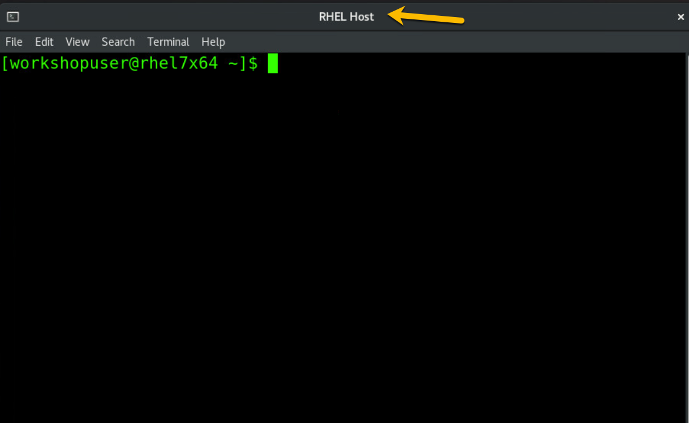

Start the GREP11 Server as a Secure Execution-enabled, HPVS 2.1.3 guest¶
launch the HPVS 2.1.3 GREP11 server¶
You will start this section from your login session on the RHEL host, and will soon be instructed to switch to your Ubuntu KVM guest session. But until then, start from this familiar window or tab:

This fancy command figures out the last two characters of your assigned userid and is used in other commands in this section, so that the lab instructions will work for everybody:
suffix=$(temp=$(whoami) && echo ${temp: -2})
You aren't going to change anything here since it's already been defined for you by the instructors, but you can display the KVM guest definition of your HPVS 2.1.3 GREP11 Server:
sudo virsh dumpxml grep11se${suffix}
Definition of KVM guest for GREP11 Server
<domain type='kvm'>
<name>grep11se02</name>
<uuid>2315f8ea-a340-4506-abbf-ae04cf7ea868</uuid>
<metadata>
<libosinfo:libosinfo xmlns:libosinfo="http://libosinfo.org/xmlns/libvirt/domain/1.0">
<libosinfo:os id="http://ubuntu.com/ubuntu/20.04"/>
</libosinfo:libosinfo>
</metadata>
<memory unit='KiB'>3903488</memory>
<currentMemory unit='KiB'>3903488</currentMemory>
<vcpu placement='static'>2</vcpu>
<os>
<type arch='s390x' machine='s390-ccw-virtio-rhel8.2.0'>hvm</type>
<boot dev='hd'/>
</os>
<cpu mode='host-model' check='partial'/>
<clock offset='utc'/>
<on_poweroff>destroy</on_poweroff>
<on_reboot>restart</on_reboot>
<on_crash>destroy</on_crash>
<devices>
<emulator>/usr/libexec/qemu-kvm</emulator>
<disk type='file' device='disk'>
<driver name='qemu' type='qcow2' iommu='on'/>
<source file='/var/lib/libvirt/images/hpcr/student02/ibm-hyper-protect-container-runtime-23.1.0.qcow2'/>
<backingStore/>
<target dev='vda' bus='virtio'/>
<address type='ccw' cssid='0xfe' ssid='0x0' devno='0x0000'/>
</disk>
<disk type='file' device='disk'>
<driver name='qemu' type='raw' cache='none' io='native' iommu='on'/>
<source file='/var/lib/libvirt/images/hpvslab/student02/ciiso.iso'/>
<target dev='vdc' bus='virtio'/>
<readonly/>
<address type='ccw' cssid='0xfe' ssid='0x0' devno='0x0002'/>
</disk>
<controller type='pci' index='0' model='pci-root'/>
<interface type='network'>
<mac address='52:54:00:b1:e0:11'/>
<source network='default'/>
<model type='virtio'/>
<driver name='vhost' iommu='on'/>
<address type='ccw' cssid='0xfe' ssid='0x0' devno='0x0001'/>
</interface>
<console type='pty'>
<target type='sclp' port='0'/>
</console>
<audio id='1' type='none'/>
<memballoon model='none'/>
<panic model='s390'/>
</devices>
</domain>
Start your GREP11 Server and attach to its console. Watch the messages carefully. You should not see any failures:
sudo virsh start grep11se${suffix} --console
This is what success looks like
Domain 'grep11se02' started
Connected to domain 'grep11se02'
Escape character is ^] (Ctrl + ])
# HPL11 build:23.1.0 enabler:22.11.6
# Tue Feb 14 17:37:53 UTC 2023
# delete old root partition...
# create new root partition...
# encrypt root partition...
# create root filesystem...
# write OS to root disk...
# decrypt user-data...
2 token decrypted, 0 encrypted token ignored
# run attestation...
# set hostname...
# finish root disk setup...
# Tue Feb 14 17:38:18 UTC 2023
# HPL11 build:23.1.0 enabler:22.11.6
# HPL11099I: bootloader end
hpcr-dnslookup[889]: HPL14000I: Network connectivity check completed successfully.
hpcr-logging[1094]: Configuring logging ...
hpcr-logging[1095]: Version [1.1.74]
hpcr-logging[1095]: Configuring logging, input [/var/hyperprotect/user-data.decrypted] ...
hpcr-logging[1095]: HPL01010I: Logging has been setup successfully.
hpcr-logging[1094]: Logging has been configured
hpcr-catch-success[1391]: VSI Status is: Success
hpcr-catch-success[1391]: VSI has started successfully.
You will have to enter the Ctrl + ] key-combination to break out of the console.
verify that GREP11 server log messages are received by rsyslog¶
The logging of the GREP11 server is going to the rsyslog service that you configured on your Ubuntu guest, so switch to the terminal tab or window for your KVM standard guest.
You should still be comfortably logged in on this tab or window:

The arguments to the journalctl command here aren't the most elegant in the world, but, unless midnight passed since you started your GREP11 Server, you will be able to see messages in rsyslog from when you just started up your GREP11 Server:
journalctl --since today --no-pager
There are a lot of messages logged, a veritable trove of treasure for the curious. Here is an example of what you should be able to see:
Log messages in rsyslog from starting the GREP11 Server
Feb 14 17:38:20 ubuntu2204 vpcnode[1439]: authentication probe
Feb 14 17:38:21 ubuntu2204 kernel[1439]: Linux version 5.4.0-136-generic (buildd@bos02-s390x-017) (gcc version 9.4.0 (Ubuntu 9.4.0-1ubuntu1~20.04.1)) #153-Ubuntu SMP Thu Nov 24 15:57:18 UTC 2022 (Ubuntu 5.4.0-136.153-generic 5.4.218)
Feb 14 17:38:21 ubuntu2204 kernel[1439]: setup.289988: Linux is running under KVM in 64-bit mode
Feb 14 17:38:21 ubuntu2204 kernel[1439]: setup.b050d0: The maximum memory size is 3812MB
Feb 14 17:38:21 ubuntu2204 kernel[1439]: numa.196305: NUMA mode: plain
Feb 14 17:38:21 ubuntu2204 kernel[1439]: cpu.33a262: 2 configured CPUs, 0 standby CPUs
Feb 14 17:38:21 ubuntu2204 kernel[1439]: Write protected kernel read-only data: 14928k
Feb 14 17:38:21 ubuntu2204 kernel[1439]: Zone ranges:
Feb 14 17:38:21 ubuntu2204 kernel[1439]: DMA [mem 0x0000000000000000-0x000000007fffffff]
Feb 14 17:38:21 ubuntu2204 kernel[1439]: Normal [mem 0x0000000080000000-0x00000000ee3fffff]
Feb 14 17:38:21 ubuntu2204 kernel[1439]: Movable zone start for each node
Feb 14 17:38:21 ubuntu2204 kernel[1439]: Early memory node ranges
Feb 14 17:38:21 ubuntu2204 kernel[1439]: node 0: [mem 0x0000000000000000-0x00000000ee3fffff]
Feb 14 17:38:21 ubuntu2204 kernel[1439]: Zeroed struct page in unavailable ranges: 7168 pages
Feb 14 17:38:21 ubuntu2204 kernel[1439]: Initmem setup node 0 [mem 0x0000000000000000-0x00000000ee3fffff]
Feb 14 17:38:21 ubuntu2204 kernel[1439]: On node 0 totalpages: 975872
Feb 14 17:38:21 ubuntu2204 kernel[1439]: DMA zone: 8192 pages used for memmap
Feb 14 17:38:21 ubuntu2204 kernel[1439]: DMA zone: 0 pages reserved
Feb 14 17:38:21 ubuntu2204 kernel[1439]: DMA zone: 524288 pages, LIFO batch:63
Feb 14 17:38:21 ubuntu2204 kernel[1439]: Normal zone: 7056 pages used for memmap
Feb 14 17:38:21 ubuntu2204 kernel[1439]: Normal zone: 451584 pages, LIFO batch:63
Feb 14 17:38:21 ubuntu2204 kernel[1439]: percpu: Embedded 34 pages/cpu s98816 r8192 d32256 u139264
Feb 14 17:38:21 ubuntu2204 kernel[1439]: pcpu-alloc: s98816 r8192 d32256 u139264 alloc=34*4096
Feb 14 17:38:21 ubuntu2204 kernel[1439]: pcpu-alloc: [0] 0 [0] 1
Feb 14 17:38:21 ubuntu2204 kernel[1439]: Built 1 zonelists, mobility grouping on. Total pages: 960624
Feb 14 17:38:21 ubuntu2204 kernel[1439]: Policy zone: Normal
Feb 14 17:38:21 ubuntu2204 kernel[1439]: Kernel command line: panic=0 blacklist=virtio_rng swiotlb=262144 cloud-init=disabled console=ttyS0 quiet loglevel=0 systemd.show_status=0 printk.time=0 systemd.getty_auto=0 systemd.firstboot=0 module.sig_enforce=1
Feb 14 17:38:21 ubuntu2204 kernel[1439]: Dentry cache hash table entries: 524288 (order: 10, 4194304 bytes, linear)
Feb 14 17:38:21 ubuntu2204 kernel[1439]: Inode-cache hash table entries: 262144 (order: 9, 2097152 bytes, linear)
Feb 14 17:38:21 ubuntu2204 kernel[1439]: mem auto-init: stack:off, heap alloc:on, heap free:off
Feb 14 17:38:21 ubuntu2204 kernel[1439]: software IO TLB: mapped [mem 0x5fffc000-0x7fffc000] (512MB)
Feb 14 17:38:21 ubuntu2204 kernel[1439]: Memory: 3277624K/3903488K available (9216K kernel code, 1716K rwdata, 5708K rodata, 3436K init, 960K bss, 625864K reserved, 0K cma-reserved)
Feb 14 17:38:21 ubuntu2204 kernel[1439]: SLUB: HWalign=256, Order=0-3, MinObjects=0, CPUs=2, Nodes=1
Feb 14 17:38:21 ubuntu2204 kernel[1439]: ftrace: allocating 29715 entries in 117 pages
Feb 14 17:38:21 ubuntu2204 kernel[1439]: rcu: Hierarchical RCU implementation.
Feb 14 17:38:21 ubuntu2204 kernel[1439]: rcu: #011RCU restricting CPUs from NR_CPUS=512 to nr_cpu_ids=2.
Feb 14 17:38:21 ubuntu2204 kernel[1439]: #011Tasks RCU enabled.
Feb 14 17:38:21 ubuntu2204 kernel[1439]: rcu: RCU calculated value of scheduler-enlistment delay is 10 jiffies.
Feb 14 17:38:21 ubuntu2204 kernel[1439]: rcu: Adjusting geometry for rcu_fanout_leaf=16, nr_cpu_ids=2
Feb 14 17:38:21 ubuntu2204 kernel[1439]: NR_IRQS: 3, nr_irqs: 3, preallocated irqs: 3
Feb 14 17:38:21 ubuntu2204 kernel[1439]: clocksource: tod: mask: 0xffffffffffffffff max_cycles: 0x3b0a9be803b0a9, max_idle_ns: 1805497147909793 ns
Feb 14 17:38:21 ubuntu2204 kernel[1439]: random: crng init done
Feb 14 17:38:21 ubuntu2204 kernel[1439]: Console: colour dummy device 80x25
Feb 14 17:38:21 ubuntu2204 kernel[1439]: printk: console [ttyS0] enabled
Feb 14 17:38:21 ubuntu2204 kernel[1439]: printk: console [ttysclp0] enabled
Feb 14 17:38:21 ubuntu2204 kernel[1439]: Calibrating delay loop (skipped)... 24038.00 BogoMIPS preset
Feb 14 17:38:21 ubuntu2204 kernel[1439]: pid_max: default: 32768 minimum: 301
Feb 14 17:38:21 ubuntu2204 kernel[1439]: LSM: Security Framework initializing
Feb 14 17:38:21 ubuntu2204 kernel[1439]: Yama: becoming mindful.
Feb 14 17:38:21 ubuntu2204 kernel[1439]: AppArmor: AppArmor initialized
Feb 14 17:38:21 ubuntu2204 kernel[1439]: Mount-cache hash table entries: 8192 (order: 4, 65536 bytes, linear)
Feb 14 17:38:21 ubuntu2204 kernel[1439]: Mountpoint-cache hash table entries: 8192 (order: 4, 65536 bytes, linear)
Feb 14 17:38:21 ubuntu2204 kernel[1439]: *** VALIDATE tmpfs ***
Feb 14 17:38:21 ubuntu2204 kernel[1439]: *** VALIDATE proc ***
Feb 14 17:38:21 ubuntu2204 kernel[1439]: *** VALIDATE cgroup1 ***
Feb 14 17:38:21 ubuntu2204 kernel[1439]: *** VALIDATE cgroup2 ***
Feb 14 17:38:21 ubuntu2204 kernel[1439]: rcu: Hierarchical SRCU implementation.
Feb 14 17:38:21 ubuntu2204 kernel[1439]: smp: Bringing up secondary CPUs ...
Feb 14 17:38:21 ubuntu2204 kernel[1439]: smp: Brought up 1 node, 2 CPUs
Feb 14 17:38:21 ubuntu2204 kernel[1439]: devtmpfs: initialized
Feb 14 17:38:21 ubuntu2204 kernel[1439]: clocksource: jiffies: mask: 0xffffffff max_cycles: 0xffffffff, max_idle_ns: 19112604462750000 ns
Feb 14 17:38:21 ubuntu2204 kernel[1439]: futex hash table entries: 512 (order: 5, 131072 bytes, linear)
Feb 14 17:38:21 ubuntu2204 kernel[1439]: NET: Registered protocol family 16
Feb 14 17:38:21 ubuntu2204 kernel[1439]: audit: initializing netlink subsys (disabled)
Feb 14 17:38:21 ubuntu2204 kernel[1439]: audit: type=2000 audit(1676396272.929:1): state=initialized audit_enabled=0 res=1
Feb 14 17:38:21 ubuntu2204 kernel[1439]: Spectre V2 mitigation: etokens
Feb 14 17:38:21 ubuntu2204 kernel[1439]: HugeTLB registered 1.00 MiB page size, pre-allocated 0 pages
Feb 14 17:38:21 ubuntu2204 kernel[1439]: iommu: Default domain type: Translated
Feb 14 17:38:21 ubuntu2204 kernel[1439]: SCSI subsystem initialized
Feb 14 17:38:21 ubuntu2204 kernel[1439]: NetLabel: Initializing
Feb 14 17:38:21 ubuntu2204 kernel[1439]: NetLabel: domain hash size = 128
Feb 14 17:38:21 ubuntu2204 kernel[1439]: NetLabel: protocols = UNLABELED CIPSOv4 CALIPSO
Feb 14 17:38:21 ubuntu2204 kernel[1439]: NetLabel: unlabeled traffic allowed by default
Feb 14 17:38:21 ubuntu2204 kernel[1439]: *** VALIDATE bpf ***
Feb 14 17:38:21 ubuntu2204 kernel[1439]: VFS: Disk quotas dquot_6.6.0
Feb 14 17:38:21 ubuntu2204 kernel[1439]: VFS: Dquot-cache hash table entries: 512 (order 0, 4096 bytes)
Feb 14 17:38:21 ubuntu2204 kernel[1439]: *** VALIDATE ramfs ***
Feb 14 17:38:21 ubuntu2204 kernel[1439]: *** VALIDATE hugetlbfs ***
Feb 14 17:38:21 ubuntu2204 kernel[1439]: AppArmor: AppArmor Filesystem Enabled
Feb 14 17:38:21 ubuntu2204 kernel[1439]: NET: Registered protocol family 2
Feb 14 17:38:21 ubuntu2204 kernel[1439]: IP idents hash table entries: 65536 (order: 7, 524288 bytes, linear)
Feb 14 17:38:21 ubuntu2204 kernel[1439]: tcp_listen_portaddr_hash hash table entries: 2048 (order: 3, 32768 bytes, linear)
Feb 14 17:38:21 ubuntu2204 kernel[1439]: TCP established hash table entries: 32768 (order: 6, 262144 bytes, linear)
Feb 14 17:38:21 ubuntu2204 kernel[1439]: TCP bind hash table entries: 32768 (order: 7, 524288 bytes, linear)
Feb 14 17:38:21 ubuntu2204 kernel[1439]: TCP: Hash tables configured (established 32768 bind 32768)
Feb 14 17:38:21 ubuntu2204 kernel[1439]: UDP hash table entries: 2048 (order: 4, 65536 bytes, linear)
Feb 14 17:38:21 ubuntu2204 kernel[1439]: UDP-Lite hash table entries: 2048 (order: 4, 65536 bytes, linear)
Feb 14 17:38:21 ubuntu2204 kernel[1439]: NET: Registered protocol family 1
Feb 14 17:38:21 ubuntu2204 kernel[1439]: NET: Registered protocol family 44
Feb 14 17:38:21 ubuntu2204 kernel[1439]: Trying to unpack rootfs image as initramfs...
Feb 14 17:38:21 ubuntu2204 kernel[1439]: Freeing initrd memory: 8780K
Feb 14 17:38:21 ubuntu2204 kernel[1439]: kvm-s390.a3074b: SIE is not available
Feb 14 17:38:21 ubuntu2204 kernel[1439]: hypfs.7f5705: The hardware system does not support hypfs
Feb 14 17:38:21 ubuntu2204 kernel[1439]: Initialise system trusted keyrings
Feb 14 17:38:21 ubuntu2204 kernel[1439]: Key type blacklist registered
Feb 14 17:38:21 ubuntu2204 kernel[1439]: workingset: timestamp_bits=42 max_order=20 bucket_order=0
Feb 14 17:38:21 ubuntu2204 kernel[1439]: zbud: loaded
Feb 14 17:38:21 ubuntu2204 kernel[1439]: squashfs: version 4.0 (2009/01/31) Phillip Lougher
Feb 14 17:38:21 ubuntu2204 kernel[1439]: fuse: init (API version 7.31)
Feb 14 17:38:21 ubuntu2204 kernel[1439]: *** VALIDATE fuse ***
Feb 14 17:38:21 ubuntu2204 kernel[1439]: *** VALIDATE fuse ***
Feb 14 17:38:21 ubuntu2204 kernel[1439]: Platform Keyring initialized
Feb 14 17:38:21 ubuntu2204 kernel[1439]: Key type asymmetric registered
Feb 14 17:38:21 ubuntu2204 kernel[1439]: Asymmetric key parser 'x509' registered
Feb 14 17:38:21 ubuntu2204 kernel[1439]: Block layer SCSI generic (bsg) driver version 0.4 loaded (major 250)
Feb 14 17:38:21 ubuntu2204 kernel[1439]: io scheduler mq-deadline registered
Feb 14 17:38:21 ubuntu2204 kernel[1439]: hvc_iucv.691dff: The z/VM IUCV HVC device driver cannot be used without z/VM
Feb 14 17:38:21 ubuntu2204 kernel[1439]: loop: module loaded
Feb 14 17:38:21 ubuntu2204 kernel[1439]: tun: Universal TUN/TAP device driver, 1.6
Feb 14 17:38:21 ubuntu2204 kernel[1439]: device-mapper: uevent: version 1.0.3
Feb 14 17:38:21 ubuntu2204 kernel[1439]: device-mapper: ioctl: 4.41.0-ioctl (2019-09-16) initialised: dm-devel@redhat.com
Feb 14 17:38:21 ubuntu2204 kernel[1439]: cio.b5d5f6: Channel measurement facility initialized using format extended (mode autodetected)
Feb 14 17:38:21 ubuntu2204 kernel[1439]: sclp_sd.ef2911: Store Data request failed (eq=2, di=3, response=0x40f0, flags=0x00, status=0, rc=-5)
Feb 14 17:38:21 ubuntu2204 kernel[1439]: ap.3677f7: The hardware system does not support AP instructions
Feb 14 17:38:21 ubuntu2204 kernel[1439]: drop_monitor: Initializing network drop monitor service
Feb 14 17:38:21 ubuntu2204 kernel[1439]: NET: Registered protocol family 10
Feb 14 17:38:21 ubuntu2204 kernel[1439]: Segment Routing with IPv6
Feb 14 17:38:21 ubuntu2204 kernel[1439]: NET: Registered protocol family 17
Feb 14 17:38:21 ubuntu2204 kernel[1439]: Key type dns_resolver registered
Feb 14 17:38:21 ubuntu2204 kernel[1439]: registered taskstats version 1
Feb 14 17:38:21 ubuntu2204 kernel[1439]: Loading compiled-in X.509 certificates
Feb 14 17:38:21 ubuntu2204 kernel[1439]: Loaded X.509 cert 'Build time autogenerated kernel key: 33ff8022a129d630916009cb7675eb5fd18109f5'
Feb 14 17:38:21 ubuntu2204 kernel[1439]: Loaded X.509 cert 'Canonical Ltd. Live Patch Signing: 14df34d1a87cf37625abec039ef2bf521249b969'
Feb 14 17:38:21 ubuntu2204 kernel[1439]: Loaded X.509 cert 'Canonical Ltd. Kernel Module Signing: 88f752e560a1e0737e31163a466ad7b70a850c19'
Feb 14 17:38:21 ubuntu2204 kernel[1439]: blacklist: Loading compiled-in revocation X.509 certificates
Feb 14 17:38:21 ubuntu2204 kernel[1439]: Loaded X.509 cert 'Canonical Ltd. Secure Boot Signing: 61482aa2830d0ab2ad5af10b7250da9033ddcef0'
Feb 14 17:38:21 ubuntu2204 kernel[1439]: zswap: loaded using pool lzo/zbud
Feb 14 17:38:21 ubuntu2204 kernel[1439]: Key type ._fscrypt registered
Feb 14 17:38:21 ubuntu2204 kernel[1439]: Key type .fscrypt registered
Feb 14 17:38:21 ubuntu2204 kernel[1439]: Key type big_key registered
Feb 14 17:38:21 ubuntu2204 kernel[1439]: Key type encrypted registered
Feb 14 17:38:21 ubuntu2204 kernel[1439]: AppArmor: AppArmor sha1 policy hashing enabled
Feb 14 17:38:21 ubuntu2204 kernel[1439]: ima: No TPM chip found, activating TPM-bypass!
Feb 14 17:38:21 ubuntu2204 kernel[1439]: ima: Allocated hash algorithm: sha1
Feb 14 17:38:21 ubuntu2204 kernel[1439]: ima: No architecture policies found
Feb 14 17:38:21 ubuntu2204 kernel[1439]: evm: Initialising EVM extended attributes:
Feb 14 17:38:21 ubuntu2204 kernel[1439]: evm: security.selinux
Feb 14 17:38:21 ubuntu2204 kernel[1439]: evm: security.SMACK64
Feb 14 17:38:21 ubuntu2204 kernel[1439]: evm: security.SMACK64EXEC
Feb 14 17:38:21 ubuntu2204 kernel[1439]: evm: security.SMACK64TRANSMUTE
Feb 14 17:38:21 ubuntu2204 kernel[1439]: evm: security.SMACK64MMAP
Feb 14 17:38:21 ubuntu2204 kernel[1439]: evm: security.apparmor
Feb 14 17:38:21 ubuntu2204 kernel[1439]: evm: security.ima
Feb 14 17:38:21 ubuntu2204 kernel[1439]: evm: security.capability
Feb 14 17:38:21 ubuntu2204 kernel[1439]: evm: HMAC attrs: 0x1
Feb 14 17:38:21 ubuntu2204 kernel[1439]: Freeing unused kernel memory: 3436K
Feb 14 17:38:21 ubuntu2204 kernel[1439]: Write protected read-only-after-init data: 88k
Feb 14 17:38:21 ubuntu2204 kernel[1439]: Run /init as init process
Feb 14 17:38:21 ubuntu2204 kernel[1439]: virtio_blk virtio1: [vda] 816 512-byte logical blocks (418 kB/408 KiB)
Feb 14 17:38:21 ubuntu2204 kernel[1439]: virtio_blk virtio0: [vdb] 209715200 512-byte logical blocks (107 GB/100 GiB)
Feb 14 17:38:21 ubuntu2204 kernel[1439]: vdb: vdb1 vdb2
Feb 14 17:38:21 ubuntu2204 kernel[1439]: EXT4-fs (dm-0): mounted filesystem with ordered data mode. Opts: (null)
Feb 14 17:38:21 ubuntu2204 kernel[1439]: EXT4-fs (vdb1): mounted filesystem with ordered data mode. Opts: (null)
Feb 14 17:38:21 ubuntu2204 kernel[1439]: ISO 9660 Extensions: Microsoft Joliet Level 3
Feb 14 17:38:21 ubuntu2204 kernel[1439]: ISO 9660 Extensions: RRIP_1991A
Feb 14 17:38:21 ubuntu2204 kernel[1439]: EXT4-fs (dm-0): re-mounted. Opts: (null)
Feb 14 17:38:21 ubuntu2204 systemd[1439]: systemd 245.4-4ubuntu3.19 running in system mode. (+PAM +AUDIT +SELINUX +IMA +APPARMOR +SMACK +SYSVINIT +UTMP +LIBCRYPTSETUP +GCRYPT +GNUTLS +ACL +XZ +LZ4 +SECCOMP +BLKID +ELFUTILS +KMOD +IDN2 -IDN +PCRE2 default-hierarchy=hybrid)
Feb 14 17:38:21 ubuntu2204 systemd[1439]: Detected virtualization kvm.
Feb 14 17:38:21 ubuntu2204 systemd[1439]: Detected architecture s390x.
Feb 14 17:38:21 ubuntu2204 systemd[1439]: Set hostname to <student02-grep11server>.
Feb 14 17:38:21 ubuntu2204 systemd[1439]: Initializing machine ID from D-Bus machine ID.
Feb 14 17:38:21 ubuntu2204 systemd[1439]: Installed transient /etc/machine-id file.
Feb 14 17:38:21 ubuntu2204 systemd[1439]: /usr/lib/systemd/system-generators/s390-cpi-vars failed with exit status 1.
Feb 14 17:38:21 ubuntu2204 systemd[1439]: Created slice system-modprobe.slice.
Feb 14 17:38:21 ubuntu2204 systemd[1439]: Created slice system-systemd\x2dfsck.slice.
Feb 14 17:38:21 ubuntu2204 systemd[1439]: Created slice User and Session Slice.
Feb 14 17:38:21 ubuntu2204 systemd[1439]: Started Forward Password Requests to Wall Directory Watch.
Feb 14 17:38:21 ubuntu2204 systemd[1439]: Set up automount Arbitrary Executable File Formats File System Automount Point.
Feb 14 17:38:21 ubuntu2204 systemd[1439]: Reached target Slices.
Feb 14 17:38:21 ubuntu2204 systemd[1439]: Reached target Swap.
Feb 14 17:38:21 ubuntu2204 systemd[1439]: Listening on Device-mapper event daemon FIFOs.
Feb 14 17:38:21 ubuntu2204 systemd[1439]: Listening on LVM2 poll daemon socket.
Feb 14 17:38:21 ubuntu2204 systemd[1439]: Listening on multipathd control socket.
Feb 14 17:38:21 ubuntu2204 systemd[1439]: Listening on Syslog Socket.
Feb 14 17:38:21 ubuntu2204 systemd[1439]: Listening on fsck to fsckd communication Socket.
Feb 14 17:38:21 ubuntu2204 systemd[1439]: Listening on initctl Compatibility Named Pipe.
Feb 14 17:38:21 ubuntu2204 systemd[1439]: Listening on Journal Audit Socket.
Feb 14 17:38:21 ubuntu2204 systemd[1439]: Listening on Journal Socket (/dev/log).
Feb 14 17:38:21 ubuntu2204 systemd[1439]: Listening on Journal Socket.
Feb 14 17:38:21 ubuntu2204 systemd[1439]: Listening on Network Service Netlink Socket.
Feb 14 17:38:21 ubuntu2204 systemd[1439]: Listening on udev Control Socket.
Feb 14 17:38:21 ubuntu2204 systemd[1439]: Listening on udev Kernel Socket.
Feb 14 17:38:21 ubuntu2204 systemd[1439]: Mounting Huge Pages File System...
Feb 14 17:38:21 ubuntu2204 systemd[1439]: Mounting POSIX Message Queue File System...
Feb 14 17:38:21 ubuntu2204 systemd[1439]: Mounting Kernel Debug File System...
Feb 14 17:38:21 ubuntu2204 systemd[1439]: Mounting Kernel Trace File System...
Feb 14 17:38:21 ubuntu2204 systemd[1439]: Starting Journal Service...
Feb 14 17:38:21 ubuntu2204 systemd[1439]: Starting Set the console keyboard layout...
Feb 14 17:38:21 ubuntu2204 systemd[1439]: Starting Create list of static device nodes for the current kernel...
Feb 14 17:38:21 ubuntu2204 systemd[1439]: Starting Monitoring of LVM2 mirrors, snapshots etc. using dmeventd or progress polling...
Feb 14 17:38:21 ubuntu2204 systemd[1439]: Starting Load Kernel Module chromeos_pstore...
Feb 14 17:38:21 ubuntu2204 systemd[1439]: Starting Load Kernel Module drm...
Feb 14 17:38:21 ubuntu2204 systemd[1439]: Starting Load Kernel Module efi_pstore...
Feb 14 17:38:21 ubuntu2204 systemd[1439]: Starting Load Kernel Module pstore_blk...
Feb 14 17:38:21 ubuntu2204 systemd[1439]: Starting Load Kernel Module pstore_zone...
Feb 14 17:38:21 ubuntu2204 systemd[1439]: Starting Load Kernel Module ramoops...
Feb 14 17:38:21 ubuntu2204 systemd[1439]: Condition check resulted in OpenVSwitch configuration for cleanup being skipped.
Feb 14 17:38:21 ubuntu2204 systemd[1439]: Condition check resulted in Set Up Additional Binary Formats being skipped.
Feb 14 17:38:21 ubuntu2204 systemd[1439]: Starting File System Check on Root Device...
Feb 14 17:38:21 ubuntu2204 systemd[1439]: Starting Load Kernel Modules...
Feb 14 17:38:21 ubuntu2204 systemd[1439]: Starting udev Coldplug all Devices...
Feb 14 17:38:21 ubuntu2204 systemd[1439]: Mounted Huge Pages File System.
Feb 14 17:38:21 ubuntu2204 systemd[1439]: Mounted POSIX Message Queue File System.
Feb 14 17:38:21 ubuntu2204 systemd[1439]: Mounted Kernel Debug File System.
Feb 14 17:38:21 ubuntu2204 systemd[1439]: Mounted Kernel Trace File System.
Feb 14 17:38:21 ubuntu2204 systemd[1439]: Finished Create list of static device nodes for the current kernel.
Feb 14 17:38:21 ubuntu2204 systemd[1439]: modprobe@chromeos_pstore.service: Succeeded.
Feb 14 17:38:21 ubuntu2204 systemd[1439]: Finished Load Kernel Module chromeos_pstore.
Feb 14 17:38:21 ubuntu2204 systemd[1439]: modprobe@efi_pstore.service: Succeeded.
Feb 14 17:38:21 ubuntu2204 systemd[1439]: Finished Load Kernel Module efi_pstore.
Feb 14 17:38:21 ubuntu2204 systemd[1439]: modprobe@pstore_blk.service: Succeeded.
Feb 14 17:38:21 ubuntu2204 systemd[1439]: Finished Load Kernel Module pstore_blk.
Feb 14 17:38:21 ubuntu2204 systemd[1439]: modprobe@pstore_zone.service: Succeeded.
Feb 14 17:38:21 ubuntu2204 systemd[1439]: Finished Load Kernel Module pstore_zone.
Feb 14 17:38:21 ubuntu2204 systemd[1439]: Finished Load Kernel Modules.
Feb 14 17:38:21 ubuntu2204 systemd[1439]: Mounting FUSE Control File System...
Feb 14 17:38:21 ubuntu2204 systemd[1439]: Mounting Kernel Configuration File System...
Feb 14 17:38:21 ubuntu2204 systemd[1439]: Starting Apply Kernel Variables...
Feb 14 17:38:21 ubuntu2204 systemd[1439]: Mounted FUSE Control File System.
Feb 14 17:38:21 ubuntu2204 systemd[1439]: Started File System Check Daemon to report status.
Feb 14 17:38:21 ubuntu2204 systemd[1439]: Mounted Kernel Configuration File System.
Feb 14 17:38:21 ubuntu2204 systemd[1439]: Finished File System Check on Root Device.
Feb 14 17:38:21 ubuntu2204 systemd[1439]: Starting Remount Root and Kernel File Systems...
Feb 14 17:38:21 ubuntu2204 systemd[1439]: Finished Apply Kernel Variables.
Feb 14 17:38:21 ubuntu2204 kernel[1439]: EXT4-fs (dm-0): re-mounted. Opts: errors=remount-ro
Feb 14 17:38:21 ubuntu2204 systemd[1439]: Finished Remount Root and Kernel File Systems.
Feb 14 17:38:21 ubuntu2204 systemd[1439]: Condition check resulted in Rebuild Hardware Database being skipped.
Feb 14 17:38:21 ubuntu2204 systemd[1439]: Starting Load/Save Random Seed...
Feb 14 17:38:21 ubuntu2204 systemd[1439]: Starting Create System Users...
Feb 14 17:38:21 ubuntu2204 systemd[1439]: Finished Create System Users.
Feb 14 17:38:21 ubuntu2204 systemd[1439]: Starting Create Static Device Nodes in /dev...
Feb 14 17:38:21 ubuntu2204 systemd[1439]: Finished udev Coldplug all Devices.
Feb 14 17:38:21 ubuntu2204 systemd[1439]: Starting udev Wait for Complete Device Initialization...
Feb 14 17:38:21 ubuntu2204 systemd[1439]: Finished Create Static Device Nodes in /dev.
Feb 14 17:38:21 ubuntu2204 systemd[1439]: Starting udev Kernel Device Manager...
Feb 14 17:38:21 ubuntu2204 systemd-journald[1439]: Journal started
Feb 14 17:38:21 ubuntu2204 systemd-journald[1439]: Runtime Journal (/run/log/journal/1dcc72ccd9744ca4bf0ed36a45a64fde) is 4.0M, max 32.1M, 28.1M free.
Feb 14 17:38:21 ubuntu2204 systemd-modules-load[1439]: Failed to find module 'ipmi-devintf'
Feb 14 17:38:21 ubuntu2204 systemd[1439]: Started Journal Service.
Feb 14 17:38:21 ubuntu2204 systemd-sysctl[1439]: Not setting net/ipv4/conf/all/promote_secondaries (explicit setting exists).
Feb 14 17:38:21 ubuntu2204 systemd-journald[1439]: Time spent on flushing to /var/log/journal/1dcc72ccd9744ca4bf0ed36a45a64fde is 1.088ms for 239 entries.
Feb 14 17:38:21 ubuntu2204 systemd-journald[1439]: System Journal (/var/log/journal/1dcc72ccd9744ca4bf0ed36a45a64fde) is 8.0M, max 4.0G, 3.9G free.
Feb 14 17:38:21 ubuntu2204 systemd-sysctl[1439]: Not setting net/ipv4/conf/default/promote_secondaries (explicit setting exists).
Feb 14 17:38:21 ubuntu2204 systemd[1439]: Starting Flush Journal to Persistent Storage...
Feb 14 17:38:21 ubuntu2204 systemd[1439]: Finished Load/Save Random Seed.
Feb 14 17:38:21 ubuntu2204 systemd[1439]: modprobe@drm.service: Succeeded.
Feb 14 17:38:21 ubuntu2204 systemd[1439]: Finished Load Kernel Module drm.
Feb 14 17:38:21 ubuntu2204 systemd[1439]: modprobe@ramoops.service: Succeeded.
Feb 14 17:38:21 ubuntu2204 systemd[1439]: Finished Load Kernel Module ramoops.
Feb 14 17:38:21 ubuntu2204 systemd[1439]: Condition check resulted in Platform Persistent Storage Archival being skipped.
Feb 14 17:38:21 ubuntu2204 systemd[1439]: Started udev Kernel Device Manager.
Feb 14 17:38:21 ubuntu2204 systemd[1439]: Starting Network Service...
Feb 14 17:38:21 ubuntu2204 systemd[1439]: Finished Flush Journal to Persistent Storage.
Feb 14 17:38:21 ubuntu2204 systemd-fsck[1439]: /dev/mapper/luks-83ed88f3-2a74-47bb-b3c1-1b0a2ff3dc03: clean, 27572/6291456 files, 785365/25161728 blocks
Feb 14 17:38:21 ubuntu2204 systemd-networkd[1439]: Enumeration completed
Feb 14 17:38:21 ubuntu2204 systemd[1439]: Started Network Service.
Feb 14 17:38:21 ubuntu2204 systemd[1439]: Starting Wait for Network to be Configured...
Feb 14 17:38:21 ubuntu2204 systemd[1439]: Finished Wait for Network to be Configured.
Feb 14 17:38:21 ubuntu2204 systemd[1439]: Finished Set the console keyboard layout.
Feb 14 17:38:21 ubuntu2204 systemd[1439]: Condition check resulted in Show Plymouth Boot Screen being skipped.
Feb 14 17:38:21 ubuntu2204 systemd[1439]: Started Dispatch Password Requests to Console Directory Watch.
Feb 14 17:38:21 ubuntu2204 systemd[1439]: Condition check resulted in Forward Password Requests to Plymouth Directory Watch being skipped.
Feb 14 17:38:21 ubuntu2204 systemd[1439]: Reached target Local Encrypted Volumes.
Feb 14 17:38:21 ubuntu2204 systemd[1439]: Reached target Paths.
Feb 14 17:38:21 ubuntu2204 kernel[1439]: VFIO - User Level meta-driver version: 0.3
Feb 14 17:38:21 ubuntu2204 systemd-udevd[1439]: ethtool: autonegotiation is unset or enabled, the speed and duplex are not writable.
Feb 14 17:38:21 ubuntu2204 systemd[1439]: Found device /dev/disk/by-uuid/8b336c4a-74e3-4ca8-a907-4c445428b8b7.
Feb 14 17:38:21 ubuntu2204 systemd-udevd[1439]: Using default interface naming scheme 'v245'.
Feb 14 17:38:21 ubuntu2204 systemd-udevd[1439]: ethtool: autonegotiation is unset or enabled, the speed and duplex are not writable.
Feb 14 17:38:21 ubuntu2204 kernel[1439]: virtio_net virtio2 enc1: renamed from eth0
Feb 14 17:38:21 ubuntu2204 udevadm[1439]: systemd-udev-settle.service is deprecated.
Feb 14 17:38:21 ubuntu2204 systemd-networkd[1439]: eth0: Interface name change detected, eth0 has been renamed to enc1.
Feb 14 17:38:21 ubuntu2204 systemd-udevd[1439]: Using default interface naming scheme 'v245'.
Feb 14 17:38:21 ubuntu2204 systemd-udevd[1439]: ethtool: autonegotiation is unset or enabled, the speed and duplex are not writable.
Feb 14 17:38:21 ubuntu2204 systemd-networkd[1439]: enc1: IPv6 successfully enabled
Feb 14 17:38:21 ubuntu2204 systemd-networkd[1439]: enc1: Link UP
Feb 14 17:38:21 ubuntu2204 systemd[1439]: Finished udev Wait for Complete Device Initialization.
Feb 14 17:38:21 ubuntu2204 systemd[1439]: Starting Device-Mapper Multipath Device Controller...
Feb 14 17:38:21 ubuntu2204 kernel[1439]: alua: device handler registered
Feb 14 17:38:21 ubuntu2204 kernel[1439]: emc: device handler registered
Feb 14 17:38:21 ubuntu2204 kernel[1439]: rdac: device handler registered
Feb 14 17:38:21 ubuntu2204 multipathd[1439]: --------start up--------
Feb 14 17:38:21 ubuntu2204 multipathd[1439]: read /etc/multipath.conf
Feb 14 17:38:21 ubuntu2204 multipathd[1439]: path checkers start up
Feb 14 17:38:21 ubuntu2204 systemd[1439]: Started Device-Mapper Multipath Device Controller.
Feb 14 17:38:21 ubuntu2204 systemd[1439]: Finished Monitoring of LVM2 mirrors, snapshots etc. using dmeventd or progress polling.
Feb 14 17:38:21 ubuntu2204 systemd[1439]: Reached target Local File Systems (Pre).
Feb 14 17:38:21 ubuntu2204 systemd[1439]: Starting File System Check on /dev/disk/by-uuid/8b336c4a-74e3-4ca8-a907-4c445428b8b7...
Feb 14 17:38:21 ubuntu2204 systemd-fsck[1439]: /dev/vdb1: clean, 13/262144 files, 119488/1048064 blocks
Feb 14 17:38:21 ubuntu2204 systemd[1439]: Finished File System Check on /dev/disk/by-uuid/8b336c4a-74e3-4ca8-a907-4c445428b8b7.
Feb 14 17:38:21 ubuntu2204 systemd[1439]: Mounting /boot...
Feb 14 17:38:21 ubuntu2204 systemd[1439]: Mounted /boot.
Feb 14 17:38:21 ubuntu2204 systemd[1439]: Reached target Local File Systems.
Feb 14 17:38:21 ubuntu2204 kernel[1439]: EXT4-fs (vdb1): mounted filesystem with ordered data mode. Opts: (null)
Feb 14 17:38:21 ubuntu2204 systemd[1439]: Starting Set console font and keymap...
Feb 14 17:38:21 ubuntu2204 systemd[1439]: Starting Apply Control Program Identification (CPI)...
Feb 14 17:38:21 ubuntu2204 systemd[1439]: Starting Create final runtime dir for shutdown pivot root...
Feb 14 17:38:21 ubuntu2204 systemd[1439]: Condition check resulted in LXD - agent - 9p mount being skipped.
Feb 14 17:38:21 ubuntu2204 systemd[1439]: Condition check resulted in LXD - agent being skipped.
Feb 14 17:38:21 ubuntu2204 systemd[1439]: Starting Tell Plymouth To Write Out Runtime Data...
Feb 14 17:38:21 ubuntu2204 systemd[1439]: Condition check resulted in Store a System Token in an EFI Variable being skipped.
Feb 14 17:38:21 ubuntu2204 systemd[1439]: Starting Commit a transient machine-id on disk...
Feb 14 17:38:21 ubuntu2204 systemd[1439]: Starting Create Volatile Files and Directories...
Feb 14 17:38:21 ubuntu2204 systemd[1439]: Finished Create final runtime dir for shutdown pivot root.
Feb 14 17:38:21 ubuntu2204 systemd[1439]: Finished Set console font and keymap.
Feb 14 17:38:21 ubuntu2204 systemd[1439]: Finished Create Volatile Files and Directories.
Feb 14 17:38:21 ubuntu2204 systemd[1439]: Starting Network Name Resolution...
Feb 14 17:38:21 ubuntu2204 systemd[1439]: Starting Network Time Synchronization...
Feb 14 17:38:21 ubuntu2204 systemd[1439]: Starting Update UTMP about System Boot/Shutdown...
Feb 14 17:38:21 ubuntu2204 systemd[1439]: plymouth-read-write.service: Succeeded.
Feb 14 17:38:21 ubuntu2204 systemd[1439]: Finished Tell Plymouth To Write Out Runtime Data.
Feb 14 17:38:21 ubuntu2204 systemd[1439]: Finished Update UTMP about System Boot/Shutdown.
Feb 14 17:38:21 ubuntu2204 systemd[1439]: etc-machine\x2did.mount: Succeeded.
Feb 14 17:38:21 ubuntu2204 systemd[1439]: Finished Commit a transient machine-id on disk.
Feb 14 17:38:21 ubuntu2204 cpictl[1439]: /lib/s390-tools/cpictl: line 112: echo: write error: Operation not supported
Feb 14 17:38:21 ubuntu2204 systemd[1439]: cpi.service: Succeeded.
Feb 14 17:38:21 ubuntu2204 systemd[1439]: Finished Apply Control Program Identification (CPI).
Feb 14 17:38:21 ubuntu2204 systemd-resolved[1439]: Positive Trust Anchors:
Feb 14 17:38:21 ubuntu2204 systemd-resolved[1439]: . IN DS 20326 8 2 e06d44b80b8f1d39a95c0b0d7c65d08458e880409bbc683457104237c7f8ec8d
Feb 14 17:38:21 ubuntu2204 systemd-resolved[1439]: Negative trust anchors: 10.in-addr.arpa 16.172.in-addr.arpa 17.172.in-addr.arpa 18.172.in-addr.arpa 19.172.in-addr.arpa 20.172.in-addr.arpa 21.172.in-addr.arpa 22.172.in-addr.arpa 23.172.in-addr.arpa 24.172.in-addr.arpa 25.172.in-addr.arpa 26.172.in-addr.arpa 27.172.in-addr.arpa 28.172.in-addr.arpa 29.172.in-addr.arpa 30.172.in-addr.arpa 31.172.in-addr.arpa 168.192.in-addr.arpa d.f.ip6.arpa corp home internal intranet lan local private test
Feb 14 17:38:21 ubuntu2204 systemd-resolved[1439]: Using system hostname 'student02-grep11server'.
Feb 14 17:38:21 ubuntu2204 systemd[1439]: Started Network Name Resolution.
Feb 14 17:38:21 ubuntu2204 systemd[1439]: Reached target Network.
Feb 14 17:38:21 ubuntu2204 systemd[1439]: Reached target Network is Online.
Feb 14 17:38:21 ubuntu2204 systemd[1439]: Reached target Host and Network Name Lookups.
Feb 14 17:38:21 ubuntu2204 systemd[1439]: Condition check resulted in Login to default iSCSI targets being skipped.
Feb 14 17:38:21 ubuntu2204 systemd[1439]: Reached target Remote File Systems (Pre).
Feb 14 17:38:21 ubuntu2204 systemd[1439]: Reached target Remote File Systems.
Feb 14 17:38:21 ubuntu2204 systemd[1439]: Starting Availability of block devices...
Feb 14 17:38:21 ubuntu2204 systemd[1439]: Started Network Time Synchronization.
Feb 14 17:38:21 ubuntu2204 systemd[1439]: Reached target System Initialization.
Feb 14 17:38:21 ubuntu2204 systemd[1439]: Started Daily Cleanup of Temporary Directories.
Feb 14 17:38:21 ubuntu2204 systemd[1439]: Reached target System Time Set.
Feb 14 17:38:21 ubuntu2204 systemd[1439]: Reached target System Time Synchronized.
Feb 14 17:38:21 ubuntu2204 systemd[1439]: Started Daily apt download activities.
Feb 14 17:38:21 ubuntu2204 systemd[1439]: Started Daily apt upgrade and clean activities.
Feb 14 17:38:21 ubuntu2204 systemd[1439]: Started Periodic ext4 Online Metadata Check for All Filesystems.
Feb 14 17:38:21 ubuntu2204 systemd[1439]: Started Discard unused blocks once a week.
Feb 14 17:38:21 ubuntu2204 systemd[1439]: Started Refresh fwupd metadata regularly.
Feb 14 17:38:21 ubuntu2204 systemd[1439]: Started Daily rotation of log files.
Feb 14 17:38:21 ubuntu2204 systemd[1439]: Started Daily man-db regeneration.
Feb 14 17:38:21 ubuntu2204 systemd[1439]: Started Message of the Day.
Feb 14 17:38:21 ubuntu2204 systemd[1439]: Started Timer for calling verify disk encryption invoker service.
Feb 14 17:38:21 ubuntu2204 systemd[1439]: Reached target Timers.
Feb 14 17:38:21 ubuntu2204 systemd[1439]: Listening on D-Bus System Message Bus Socket.
Feb 14 17:38:21 ubuntu2204 systemd[1439]: Starting Docker Socket for the API.
Feb 14 17:38:21 ubuntu2204 systemd[1439]: Listening on Open-iSCSI iscsid Socket.
Feb 14 17:38:21 ubuntu2204 systemd[1439]: Listening on UUID daemon activation socket.
Feb 14 17:38:21 ubuntu2204 systemd[1439]: Listening on Docker Socket for the API.
Feb 14 17:38:21 ubuntu2204 systemd[1439]: Reached target Sockets.
Feb 14 17:38:21 ubuntu2204 systemd[1439]: Reached target Basic System.
Feb 14 17:38:21 ubuntu2204 systemd[1439]: Starting Deferred execution scheduler...
Feb 14 17:38:21 ubuntu2204 cron[1439]: (CRON) INFO (pidfile fd = 3)
Feb 14 17:38:21 ubuntu2204 systemd[1439]: Starting containerd container runtime...
Feb 14 17:38:21 ubuntu2204 systemd[1439]: Condition check resulted in CPACF statistics collection daemon process for Linux on System z being skipped.
Feb 14 17:38:21 ubuntu2204 systemd[1439]: Started Regular background program processing daemon.
Feb 14 17:38:21 ubuntu2204 cron[1439]: (CRON) INFO (Running @reboot jobs)
Feb 14 17:38:21 ubuntu2204 systemd[1439]: Started D-Bus System Message Bus.
Feb 14 17:38:21 ubuntu2204 systemd[1439]: Started Save initial kernel messages after boot.
Feb 14 17:38:21 ubuntu2204 systemd[1439]: Starting Configure dump on panic for System z...
Feb 14 17:38:21 ubuntu2204 systemd[1439]: Starting Remove Stale Online ext4 Metadata Check Snapshots...
Feb 14 17:38:21 ubuntu2204 systemd[1439]: Starting Discard unused blocks on filesystems from /etc/fstab...
Feb 14 17:38:21 ubuntu2204 systemd[1439]: Condition check resulted in getty on tty2-tty6 if dbus and logind are not available being skipped.
Feb 14 17:38:21 ubuntu2204 systemd[1439]: Reached target Login Prompts.
Feb 14 17:38:21 ubuntu2204 systemd[1439]: Started irqbalance daemon.
Feb 14 17:38:21 ubuntu2204 systemd[1439]: Condition check resulted in Set the CPU Frequency Scaling governor being skipped.
Feb 14 17:38:21 ubuntu2204 systemd[1439]: Starting Authorization Manager...
Feb 14 17:38:21 ubuntu2204 systemd[1439]: Condition check resulted in Pollinate to seed the pseudo random number generator being skipped.
Feb 14 17:38:21 ubuntu2204 systemd[1439]: Condition check resulted in fast remote file copy program daemon being skipped.
Feb 14 17:38:21 ubuntu2204 systemd[1439]: Starting Logging Configuration...
Feb 14 17:38:21 ubuntu2204 systemd[1439]: Starting Login Service...
Feb 14 17:38:21 ubuntu2204 systemd[1439]: Starting Permit User Sessions...
Feb 14 17:38:21 ubuntu2204 systemd[1439]: Starting Disk Manager...
Feb 14 17:38:21 ubuntu2204 systemd[1439]: Starting Rotate log files...
Feb 14 17:38:21 ubuntu2204 systemd[1439]: Starting Daily man-db regeneration...
Feb 14 17:38:21 ubuntu2204 systemd[1439]: Finished Availability of block devices.
Feb 14 17:38:21 ubuntu2204 systemd[1439]: Started Deferred execution scheduler.
Feb 14 17:38:21 ubuntu2204 systemd[1439]: Finished Permit User Sessions.
Feb 14 17:38:21 ubuntu2204 journal[1439]: udisks daemon version 2.8.4 starting
Feb 14 17:38:21 ubuntu2204 systemd[1439]: Starting Hold until boot process finishes up...
Feb 14 17:38:21 ubuntu2204 systemd[1439]: Starting Terminate Plymouth Boot Screen...
Feb 14 17:38:21 ubuntu2204 systemd[1439]: plymouth-quit-wait.service: Succeeded.
Feb 14 17:38:21 ubuntu2204 systemd[1439]: Finished Hold until boot process finishes up.
Feb 14 17:38:21 ubuntu2204 systemd[1439]: Starting Set console scheme...
Feb 14 17:38:21 ubuntu2204 systemd[1439]: Finished Set console scheme.
Feb 14 17:38:21 ubuntu2204 dbus-daemon[1439]: [system] AppArmor D-Bus mediation is enabled
Feb 14 17:38:21 ubuntu2204 systemd[1439]: man-db.service: Succeeded.
Feb 14 17:38:21 ubuntu2204 systemd[1439]: Finished Daily man-db regeneration.
Feb 14 17:38:21 ubuntu2204 systemd[1439]: e2scrub_reap.service: Succeeded.
Feb 14 17:38:21 ubuntu2204 systemd[1439]: Finished Remove Stale Online ext4 Metadata Check Snapshots.
Feb 14 17:38:21 ubuntu2204 systemd[1439]: plymouth-quit.service: Succeeded.
Feb 14 17:38:21 ubuntu2204 systemd[1439]: Finished Terminate Plymouth Boot Screen.
Feb 14 17:38:21 ubuntu2204 dumpconf[1439]: stop on panic configured.
Feb 14 17:38:21 ubuntu2204 polkitd[1439]: started daemon version 0.105 using authority implementation `local' version `0.105'
Feb 14 17:38:21 ubuntu2204 systemd[1439]: logrotate.service: Succeeded.
Feb 14 17:38:21 ubuntu2204 systemd[1439]: Finished Rotate log files.
Feb 14 17:38:21 ubuntu2204 systemd[1439]: Started Authorization Manager.
Feb 14 17:38:21 ubuntu2204 systemd[1439]: Starting Modem Manager...
Feb 14 17:38:21 ubuntu2204 systemd[1439]: Finished Configure dump on panic for System z.
Feb 14 17:38:21 ubuntu2204 journal[1439]: failed to load module mdraid: libbd_mdraid.so.2: cannot open shared object file: No such file or directory
Feb 14 17:38:21 ubuntu2204 ModemManager[1439]: <info> ModemManager (version 1.18.6) starting in system bus...
Feb 14 17:38:21 ubuntu2204 journal[1439]: Failed to load the 'mdraid' libblockdev plugin
Feb 14 17:38:21 ubuntu2204 systemd[1439]: Started Modem Manager.
Feb 14 17:38:21 ubuntu2204 systemd-logind[1439]: New seat seat0.
Feb 14 17:38:21 ubuntu2204 systemd[1439]: Started Login Service.
Feb 14 17:38:21 ubuntu2204 systemd[1439]: Started Disk Manager.
Feb 14 17:38:21 ubuntu2204 journal[1439]: Acquired the name org.freedesktop.UDisks2 on the system message bus
Feb 14 17:38:21 ubuntu2204 fstrim[1439]: /boot: 3.6 GiB (3803447296 bytes) trimmed on /dev/vdb1
Feb 14 17:38:21 ubuntu2204 containerd[1439]: time="2023-02-14T17:38:19.283295581Z" level=info msg="starting containerd" revision= version="1.5.9-0ubuntu1~20.04.6"
Feb 14 17:38:21 ubuntu2204 systemd[1439]: fstrim.service: Succeeded.
Feb 14 17:38:21 ubuntu2204 systemd[1439]: Finished Discard unused blocks on filesystems from /etc/fstab.
Feb 14 17:38:21 ubuntu2204 containerd[1439]: time="2023-02-14T17:38:19.322989175Z" level=info msg="loading plugin \"io.containerd.content.v1.content\"..." type=io.containerd.content.v1
Feb 14 17:38:21 ubuntu2204 containerd[1439]: time="2023-02-14T17:38:19.324771036Z" level=info msg="loading plugin \"io.containerd.snapshotter.v1.aufs\"..." type=io.containerd.snapshotter.v1
Feb 14 17:38:21 ubuntu2204 kernel[1439]: aufs 5.4.3-20200302
Feb 14 17:38:21 ubuntu2204 containerd[1439]: time="2023-02-14T17:38:19.329621227Z" level=info msg="loading plugin \"io.containerd.snapshotter.v1.btrfs\"..." type=io.containerd.snapshotter.v1
Feb 14 17:38:21 ubuntu2204 containerd[1439]: time="2023-02-14T17:38:19.329814187Z" level=info msg="skip loading plugin \"io.containerd.snapshotter.v1.btrfs\"..." error="path /var/lib/containerd/io.containerd.snapshotter.v1.btrfs (ext4) must be a btrfs filesystem to be used with the btrfs snapshotter: skip plugin" type=io.containerd.snapshotter.v1
Feb 14 17:38:21 ubuntu2204 containerd[1439]: time="2023-02-14T17:38:19.329853950Z" level=info msg="loading plugin \"io.containerd.snapshotter.v1.devmapper\"..." type=io.containerd.snapshotter.v1
Feb 14 17:38:21 ubuntu2204 containerd[1439]: time="2023-02-14T17:38:19.329893496Z" level=warning msg="failed to load plugin io.containerd.snapshotter.v1.devmapper" error="devmapper not configured"
Feb 14 17:38:21 ubuntu2204 containerd[1439]: time="2023-02-14T17:38:19.329921482Z" level=info msg="loading plugin \"io.containerd.snapshotter.v1.native\"..." type=io.containerd.snapshotter.v1
Feb 14 17:38:21 ubuntu2204 containerd[1439]: time="2023-02-14T17:38:19.330054237Z" level=info msg="loading plugin \"io.containerd.snapshotter.v1.overlayfs\"..." type=io.containerd.snapshotter.v1
Feb 14 17:38:21 ubuntu2204 containerd[1439]: time="2023-02-14T17:38:19.330186987Z" level=info msg="loading plugin \"io.containerd.snapshotter.v1.zfs\"..." type=io.containerd.snapshotter.v1
Feb 14 17:38:21 ubuntu2204 containerd[1439]: time="2023-02-14T17:38:19.330298845Z" level=info msg="skip loading plugin \"io.containerd.snapshotter.v1.zfs\"..." error="path /var/lib/containerd/io.containerd.snapshotter.v1.zfs must be a zfs filesystem to be used with the zfs snapshotter: skip plugin" type=io.containerd.snapshotter.v1
Feb 14 17:38:21 ubuntu2204 containerd[1439]: time="2023-02-14T17:38:19.330332378Z" level=info msg="loading plugin \"io.containerd.metadata.v1.bolt\"..." type=io.containerd.metadata.v1
Feb 14 17:38:21 ubuntu2204 containerd[1439]: time="2023-02-14T17:38:19.330358166Z" level=warning msg="could not use snapshotter devmapper in metadata plugin" error="devmapper not configured"
Feb 14 17:38:21 ubuntu2204 containerd[1439]: time="2023-02-14T17:38:19.330383266Z" level=info msg="metadata content store policy set" policy=shared
Feb 14 17:38:21 ubuntu2204 containerd[1439]: time="2023-02-14T17:38:19.331033245Z" level=info msg="loading plugin \"io.containerd.differ.v1.walking\"..." type=io.containerd.differ.v1
Feb 14 17:38:21 ubuntu2204 containerd[1439]: time="2023-02-14T17:38:19.331071842Z" level=info msg="loading plugin \"io.containerd.gc.v1.scheduler\"..." type=io.containerd.gc.v1
Feb 14 17:38:21 ubuntu2204 containerd[1439]: time="2023-02-14T17:38:19.331120214Z" level=info msg="loading plugin \"io.containerd.service.v1.introspection-service\"..." type=io.containerd.service.v1
Feb 14 17:38:21 ubuntu2204 containerd[1439]: time="2023-02-14T17:38:19.331183804Z" level=info msg="loading plugin \"io.containerd.service.v1.containers-service\"..." type=io.containerd.service.v1
Feb 14 17:38:21 ubuntu2204 containerd[1439]: time="2023-02-14T17:38:19.331224800Z" level=info msg="loading plugin \"io.containerd.service.v1.content-service\"..." type=io.containerd.service.v1
Feb 14 17:38:21 ubuntu2204 containerd[1439]: time="2023-02-14T17:38:19.331281253Z" level=info msg="loading plugin \"io.containerd.service.v1.diff-service\"..." type=io.containerd.service.v1
Feb 14 17:38:21 ubuntu2204 containerd[1439]: time="2023-02-14T17:38:19.331333354Z" level=info msg="loading plugin \"io.containerd.service.v1.images-service\"..." type=io.containerd.service.v1
Feb 14 17:38:21 ubuntu2204 containerd[1439]: time="2023-02-14T17:38:19.331371665Z" level=info msg="loading plugin \"io.containerd.service.v1.leases-service\"..." type=io.containerd.service.v1
Feb 14 17:38:21 ubuntu2204 containerd[1439]: time="2023-02-14T17:38:19.331407044Z" level=info msg="loading plugin \"io.containerd.service.v1.namespaces-service\"..." type=io.containerd.service.v1
Feb 14 17:38:21 ubuntu2204 containerd[1439]: time="2023-02-14T17:38:19.331436391Z" level=info msg="loading plugin \"io.containerd.service.v1.snapshots-service\"..." type=io.containerd.service.v1
Feb 14 17:38:21 ubuntu2204 containerd[1439]: time="2023-02-14T17:38:19.331473287Z" level=info msg="loading plugin \"io.containerd.runtime.v1.linux\"..." type=io.containerd.runtime.v1
Feb 14 17:38:21 ubuntu2204 containerd[1439]: time="2023-02-14T17:38:19.331544044Z" level=info msg="loading plugin \"io.containerd.runtime.v2.task\"..." type=io.containerd.runtime.v2
Feb 14 17:38:21 ubuntu2204 containerd[1439]: time="2023-02-14T17:38:19.331607188Z" level=info msg="loading plugin \"io.containerd.monitor.v1.cgroups\"..." type=io.containerd.monitor.v1
Feb 14 17:38:21 ubuntu2204 containerd[1439]: time="2023-02-14T17:38:19.331966367Z" level=info msg="loading plugin \"io.containerd.service.v1.tasks-service\"..." type=io.containerd.service.v1
Feb 14 17:38:21 ubuntu2204 containerd[1439]: time="2023-02-14T17:38:19.332026406Z" level=info msg="loading plugin \"io.containerd.internal.v1.restart\"..." type=io.containerd.internal.v1
Feb 14 17:38:21 ubuntu2204 containerd[1439]: time="2023-02-14T17:38:19.332087354Z" level=info msg="loading plugin \"io.containerd.grpc.v1.containers\"..." type=io.containerd.grpc.v1
Feb 14 17:38:21 ubuntu2204 containerd[1439]: time="2023-02-14T17:38:19.332122235Z" level=info msg="loading plugin \"io.containerd.grpc.v1.content\"..." type=io.containerd.grpc.v1
Feb 14 17:38:21 ubuntu2204 containerd[1439]: time="2023-02-14T17:38:19.332152723Z" level=info msg="loading plugin \"io.containerd.grpc.v1.diff\"..." type=io.containerd.grpc.v1
Feb 14 17:38:21 ubuntu2204 containerd[1439]: time="2023-02-14T17:38:19.332187646Z" level=info msg="loading plugin \"io.containerd.grpc.v1.events\"..." type=io.containerd.grpc.v1
Feb 14 17:38:21 ubuntu2204 containerd[1439]: time="2023-02-14T17:38:19.332216938Z" level=info msg="loading plugin \"io.containerd.grpc.v1.healthcheck\"..." type=io.containerd.grpc.v1
Feb 14 17:38:21 ubuntu2204 containerd[1439]: time="2023-02-14T17:38:19.332250263Z" level=info msg="loading plugin \"io.containerd.grpc.v1.images\"..." type=io.containerd.grpc.v1
Feb 14 17:38:21 ubuntu2204 containerd[1439]: time="2023-02-14T17:38:19.332279562Z" level=info msg="loading plugin \"io.containerd.grpc.v1.leases\"..." type=io.containerd.grpc.v1
Feb 14 17:38:21 ubuntu2204 containerd[1439]: time="2023-02-14T17:38:19.332305604Z" level=info msg="loading plugin \"io.containerd.grpc.v1.namespaces\"..." type=io.containerd.grpc.v1
Feb 14 17:38:21 ubuntu2204 containerd[1439]: time="2023-02-14T17:38:19.332327281Z" level=info msg="loading plugin \"io.containerd.internal.v1.opt\"..." type=io.containerd.internal.v1
Feb 14 17:38:21 ubuntu2204 containerd[1439]: time="2023-02-14T17:38:19.332722776Z" level=info msg="loading plugin \"io.containerd.grpc.v1.snapshots\"..." type=io.containerd.grpc.v1
Feb 14 17:38:21 ubuntu2204 containerd[1439]: time="2023-02-14T17:38:19.332754771Z" level=info msg="loading plugin \"io.containerd.grpc.v1.tasks\"..." type=io.containerd.grpc.v1
Feb 14 17:38:21 ubuntu2204 containerd[1439]: time="2023-02-14T17:38:19.332788017Z" level=info msg="loading plugin \"io.containerd.grpc.v1.version\"..." type=io.containerd.grpc.v1
Feb 14 17:38:21 ubuntu2204 containerd[1439]: time="2023-02-14T17:38:19.332812904Z" level=info msg="loading plugin \"io.containerd.grpc.v1.cri\"..." type=io.containerd.grpc.v1
Feb 14 17:38:21 ubuntu2204 containerd[1439]: time="2023-02-14T17:38:19.332902355Z" level=info msg="Start cri plugin with config {PluginConfig:{ContainerdConfig:{Snapshotter:overlayfs DefaultRuntimeName:runc DefaultRuntime:{Type: Engine: PodAnnotations:[] ContainerAnnotations:[] Root: Options:map[] PrivilegedWithoutHostDevices:false BaseRuntimeSpec:} UntrustedWorkloadRuntime:{Type: Engine: PodAnnotations:[] ContainerAnnotations:[] Root: Options:map[] PrivilegedWithoutHostDevices:false BaseRuntimeSpec:} Runtimes:map[runc:{Type:io.containerd.runc.v2 Engine: PodAnnotations:[] ContainerAnnotations:[] Root: Options:map[BinaryName: CriuImagePath: CriuPath: CriuWorkPath: IoGid:0 IoUid:0 NoNewKeyring:false NoPivotRoot:false Root: ShimCgroup: SystemdCgroup:false] PrivilegedWithoutHostDevices:false BaseRuntimeSpec:}] NoPivot:false DisableSnapshotAnnotations:true DiscardUnpackedLayers:false} CniConfig:{NetworkPluginBinDir:/opt/cni/bin NetworkPluginConfDir:/etc/cni/net.d NetworkPluginMaxConfNum:1 NetworkPluginConfTemplate:} Registry:{ConfigPath: Mirrors:map[] Configs:map[] Auths:map[] Headers:map[]} ImageDecryption:{KeyModel:node} DisableTCPService:true StreamServerAddress:127.0.0.1 StreamServerPort:0 StreamIdleTimeout:4h0m0s EnableSelinux:false SelinuxCategoryRange:1024 SandboxImage:k8s.gcr.io/pause:3.5 StatsCollectPeriod:10 SystemdCgroup:false EnableTLSStreaming:false X509KeyPairStreaming:{TLSCertFile: TLSKeyFile:} MaxContainerLogLineSize:16384 DisableCgroup:false DisableApparmor:false RestrictOOMScoreAdj:false MaxConcurrentDownloads:3 DisableProcMount:false UnsetSeccompProfile: TolerateMissingHugetlbController:true DisableHugetlbController:true IgnoreImageDefinedVolumes:false NetNSMountsUnderStateDir:false} ContainerdRootDir:/var/lib/containerd ContainerdEndpoint:/run/containerd/containerd.sock RootDir:/var/lib/containerd/io.containerd.grpc.v1.cri StateDir:/run/containerd/io.containerd.grpc.v1.cri}"
Feb 14 17:38:21 ubuntu2204 containerd[1439]: time="2023-02-14T17:38:19.332985899Z" level=info msg="Connect containerd service"
Feb 14 17:38:21 ubuntu2204 containerd[1439]: time="2023-02-14T17:38:19.333039151Z" level=info msg="Get image filesystem path \"/var/lib/containerd/io.containerd.snapshotter.v1.overlayfs\""
Feb 14 17:38:21 ubuntu2204 containerd[1439]: time="2023-02-14T17:38:19.333598171Z" level=error msg="failed to load cni during init, please check CRI plugin status before setting up network for pods" error="cni config load failed: no network config found in /etc/cni/net.d: cni plugin not initialized: failed to load cni config"
Feb 14 17:38:21 ubuntu2204 containerd[1439]: time="2023-02-14T17:38:19.333706212Z" level=info msg="loading plugin \"io.containerd.grpc.v1.introspection\"..." type=io.containerd.grpc.v1
Feb 14 17:38:21 ubuntu2204 containerd[1439]: time="2023-02-14T17:38:19.333894993Z" level=info msg=serving... address=/run/containerd/containerd.sock.ttrpc
Feb 14 17:38:21 ubuntu2204 containerd[1439]: time="2023-02-14T17:38:19.333934483Z" level=info msg=serving... address=/run/containerd/containerd.sock
Feb 14 17:38:21 ubuntu2204 containerd[1439]: time="2023-02-14T17:38:19.333979581Z" level=info msg="containerd successfully booted in 0.051063s"
Feb 14 17:38:21 ubuntu2204 systemd[1439]: Started containerd container runtime.
Feb 14 17:38:21 ubuntu2204 systemd[1439]: Starting Docker Application Container Engine...
Feb 14 17:38:21 ubuntu2204 containerd[1439]: time="2023-02-14T17:38:19.341347775Z" level=info msg="Start subscribing containerd event"
Feb 14 17:38:21 ubuntu2204 containerd[1439]: time="2023-02-14T17:38:19.341427731Z" level=info msg="Start recovering state"
Feb 14 17:38:21 ubuntu2204 containerd[1439]: time="2023-02-14T17:38:19.341503299Z" level=info msg="Start event monitor"
Feb 14 17:38:21 ubuntu2204 containerd[1439]: time="2023-02-14T17:38:19.341527042Z" level=info msg="Start snapshots syncer"
Feb 14 17:38:21 ubuntu2204 containerd[1439]: time="2023-02-14T17:38:19.341554437Z" level=info msg="Start cni network conf syncer"
Feb 14 17:38:21 ubuntu2204 containerd[1439]: time="2023-02-14T17:38:19.341577669Z" level=info msg="Start streaming server"
Feb 14 17:38:21 ubuntu2204 dockerd[1439]: time="2023-02-14T17:38:19.417162288Z" level=info msg="Starting up"
Feb 14 17:38:21 ubuntu2204 dockerd[1439]: time="2023-02-14T17:38:19.417747593Z" level=info msg="detected 127.0.0.53 nameserver, assuming systemd-resolved, so using resolv.conf: /run/systemd/resolve/resolv.conf"
Feb 14 17:38:21 ubuntu2204 dockerd[1439]: time="2023-02-14T17:38:19.418433441Z" level=info msg="parsed scheme: \"unix\"" module=grpc
Feb 14 17:38:21 ubuntu2204 dockerd[1439]: time="2023-02-14T17:38:19.418471524Z" level=info msg="scheme \"unix\" not registered, fallback to default scheme" module=grpc
Feb 14 17:38:21 ubuntu2204 dockerd[1439]: time="2023-02-14T17:38:19.418512027Z" level=info msg="ccResolverWrapper: sending update to cc: {[{unix:///run/containerd/containerd.sock <nil> 0 <nil>}] <nil> <nil>}" module=grpc
Feb 14 17:38:21 ubuntu2204 dockerd[1439]: time="2023-02-14T17:38:19.418545665Z" level=info msg="ClientConn switching balancer to \"pick_first\"" module=grpc
Feb 14 17:38:21 ubuntu2204 dockerd[1439]: time="2023-02-14T17:38:19.421022900Z" level=info msg="parsed scheme: \"unix\"" module=grpc
Feb 14 17:38:21 ubuntu2204 dockerd[1439]: time="2023-02-14T17:38:19.421069661Z" level=info msg="scheme \"unix\" not registered, fallback to default scheme" module=grpc
Feb 14 17:38:21 ubuntu2204 dockerd[1439]: time="2023-02-14T17:38:19.421103752Z" level=info msg="ccResolverWrapper: sending update to cc: {[{unix:///run/containerd/containerd.sock <nil> 0 <nil>}] <nil> <nil>}" module=grpc
Feb 14 17:38:21 ubuntu2204 dockerd[1439]: time="2023-02-14T17:38:19.421137414Z" level=info msg="ClientConn switching balancer to \"pick_first\"" module=grpc
Feb 14 17:38:21 ubuntu2204 dockerd[1439]: time="2023-02-14T17:38:19.494902961Z" level=info msg="[graphdriver] using prior storage driver: overlay2"
Feb 14 17:38:21 ubuntu2204 dockerd[1439]: time="2023-02-14T17:38:19.506175790Z" level=warning msg="Your kernel does not support swap memory limit"
Feb 14 17:38:21 ubuntu2204 dockerd[1439]: time="2023-02-14T17:38:19.506186302Z" level=warning msg="Your kernel does not support CPU realtime scheduler"
Feb 14 17:38:21 ubuntu2204 dockerd[1439]: time="2023-02-14T17:38:19.506190862Z" level=warning msg="Your kernel does not support cgroup blkio weight"
Feb 14 17:38:21 ubuntu2204 dockerd[1439]: time="2023-02-14T17:38:19.506194842Z" level=warning msg="Your kernel does not support cgroup blkio weight_device"
Feb 14 17:38:21 ubuntu2204 dockerd[1439]: time="2023-02-14T17:38:19.506304997Z" level=info msg="Loading containers: start."
Feb 14 17:38:21 ubuntu2204 kernel[1439]: bridge: filtering via arp/ip/ip6tables is no longer available by default. Update your scripts to load br_netfilter if you need this.
Feb 14 17:38:21 ubuntu2204 kernel[1439]: Bridge firewalling registered
Feb 14 17:38:21 ubuntu2204 kernel[1439]: bpfilter: Loaded bpfilter_umh pid 960
Feb 14 17:38:21 ubuntu2204 journal[1439]: Started bpfilter
Feb 14 17:38:21 ubuntu2204 kernel[1439]: Initializing XFRM netlink socket
Feb 14 17:38:21 ubuntu2204 systemd-networkd[1439]: rtnl: received neighbor for link '3' we don't know about, ignoring.
Feb 14 17:38:21 ubuntu2204 systemd-networkd[1439]: message repeated 3 times: [rtnl: received neighbor for link '3' we don't know about, ignoring.]
Feb 14 17:38:21 ubuntu2204 systemd-udevd[1439]: ethtool: autonegotiation is unset or enabled, the speed and duplex are not writable.
Feb 14 17:38:21 ubuntu2204 systemd-networkd[1439]: docker0: Link UP
Feb 14 17:38:21 ubuntu2204 dockerd[1439]: time="2023-02-14T17:38:19.581343022Z" level=info msg="Default bridge (docker0) is assigned with an IP address 172.17.0.0/16. Daemon option --bip can be used to set a preferred IP address"
Feb 14 17:38:21 ubuntu2204 dockerd[1439]: time="2023-02-14T17:38:19.597014467Z" level=info msg="Loading containers: done."
Feb 14 17:38:21 ubuntu2204 systemd[1439]: var-lib-docker-overlay2-opaque\x2dbug\x2dcheck013158240-merged.mount: Succeeded.
Feb 14 17:38:21 ubuntu2204 dockerd[1439]: time="2023-02-14T17:38:19.613641614Z" level=info msg="Docker daemon" commit="20.10.12-0ubuntu2~20.04.1" graphdriver(s)=overlay2 version=20.10.12
Feb 14 17:38:21 ubuntu2204 dockerd[1439]: time="2023-02-14T17:38:19.613739452Z" level=info msg="Daemon has completed initialization"
Feb 14 17:38:21 ubuntu2204 systemd[1439]: Started Docker Application Container Engine.
Feb 14 17:38:21 ubuntu2204 dockerd[1439]: time="2023-02-14T17:38:19.630818138Z" level=info msg="API listen on /run/docker.sock"
Feb 14 17:38:21 ubuntu2204 systemd-networkd[1439]: enc1: Gained carrier
Feb 14 17:38:21 ubuntu2204 systemd-timesyncd[1439]: Network configuration changed, trying to establish connection.
Feb 14 17:38:21 ubuntu2204 systemd-networkd[1439]: enc1: DHCPv4 address 172.16.0.62/24 via 172.16.0.1
Feb 14 17:38:21 ubuntu2204 dbus-daemon[1439]: [system] Activating via systemd: service name='org.freedesktop.hostname1' unit='dbus-org.freedesktop.hostname1.service' requested by ':1.1' (uid=100 pid=761 comm="/lib/systemd/systemd-networkd " label="unconfined")
Feb 14 17:38:21 ubuntu2204 systemd[1439]: Starting Hostname Service...
Feb 14 17:38:21 ubuntu2204 kernel[1439]: IPv6: ADDRCONF(NETDEV_CHANGE): enc1: link becomes ready
Feb 14 17:38:21 ubuntu2204 dbus-daemon[1439]: [system] Successfully activated service 'org.freedesktop.hostname1'
Feb 14 17:38:21 ubuntu2204 systemd[1439]: Started Hostname Service.
Feb 14 17:38:21 ubuntu2204 systemd-hostnamed[1439]: Changed host name to 'grep11se02'
Feb 14 17:38:21 ubuntu2204 systemd-timesyncd[1439]: Initial synchronization to time server 185.125.190.58:123 (ntp.ubuntu.com).
Feb 14 17:38:21 ubuntu2204 hpcr-dnslookup[1439]: HPL14000I: Network connectivity check completed successfully.
Feb 14 17:38:21 ubuntu2204 systemd[1439]: Finished Logging Configuration.
Feb 14 17:38:21 ubuntu2204 systemd[1439]: Reached target Early Initialization.
Feb 14 17:38:21 ubuntu2204 systemd[1439]: Reached target Logging to remote monitoring server is initiated..
Feb 14 17:38:21 ubuntu2204 systemd[1439]: Starting Logging Configuration...
Feb 14 17:38:21 ubuntu2204 hpcr-logging[1439]: Configuring logging ...
Feb 14 17:38:21 ubuntu2204 hpcr-logging[1439]: Version [1.1.74]
Feb 14 17:38:21 ubuntu2204 hpcr-logging[1439]: Configuring logging, input [/var/hyperprotect/user-data.decrypted] ...
Feb 14 17:38:21 ubuntu2204 hpcr-logging[1439]: ValidateContractE ...
Feb 14 17:38:21 ubuntu2204 hpcr-logging[1439]: config written: /etc/rsyslog.d/22-logging.conf
Feb 14 17:38:21 ubuntu2204 hpcr-logging[1439]: HPL01010I: Logging has been setup successfully.
Feb 14 17:38:21 ubuntu2204 hpcr-logging[1439]: Logging has been configured
Feb 14 17:38:21 ubuntu2204 systemd[1439]: Finished Logging Configuration.
Feb 14 17:38:21 ubuntu2204 systemd[1439]: Starting System Logging Service...
Feb 14 17:38:21 ubuntu2204 rsyslogd[1439]: rsyslogd's groupid changed to 110
Feb 14 17:38:21 ubuntu2204 systemd[1439]: Started System Logging Service.
Feb 14 17:38:21 ubuntu2204 rsyslogd[1439]: rsyslogd's userid changed to 104
Feb 14 17:38:21 ubuntu2204 rsyslogd[1439]: [origin software="rsyslogd" swVersion="8.2001.0" x-pid="1099" x-info="https://www.rsyslog.com"] start
Feb 14 17:38:21 ubuntu2204 systemd[1439]: Reached target Synchronizes the Logging Target.
Feb 14 17:38:21 ubuntu2204 systemd[1439]: Reached target Logging to remote log server is initiated..
Feb 14 17:38:21 ubuntu2204 systemd[1439]: Starting Service that does validation of contract...
Feb 14 17:38:21 ubuntu2204 systemd[1439]: Starting HPCR Registry Authentication...
Feb 14 17:38:21 ubuntu2204 rsyslogd[1439]: imjournal: No statefile exists, /var/spool/rsyslog/journal_state will be created (ignore if this is first run): No such file or directory [v8.2001.0 try https://www.rsyslog.com/e/2040 ]
Feb 14 17:38:21 ubuntu2204 hpcr-registry-auth[1439]: Starting Registry Authentication ...
Feb 14 17:38:21 ubuntu2204 hpcr-registry-auth[1439]: Version [1.0.38]
Feb 14 17:38:21 ubuntu2204 hpcr-registry-auth[1439]: Writing auth config: /root/.docker/config.json
Feb 14 17:38:21 ubuntu2204 hpcr-contract[1439]: Welcome to SE Contract Validator
Feb 14 17:38:21 ubuntu2204 hpcr-contract[1439]: Contract file passed is: /var/hyperprotect/user-data.decrypted
Feb 14 17:38:21 ubuntu2204 hpcr-registry-auth[1439]: Registry Authentication started
Feb 14 17:38:21 ubuntu2204 systemd[1439]: Finished HPCR Registry Authentication.
Feb 14 17:38:21 ubuntu2204 rsyslogd[1439]: imjournal: journal files changed, reloading... [v8.2001.0 try https://www.rsyslog.com/e/0 ]
Feb 14 17:38:21 ubuntu2204 hpcr-contract[1439]: Contract file is valid.
Feb 14 17:38:21 ubuntu2204 hpcr-contract[1439]: Extracting workload from /var/hyperprotect/user-data.decrypted to /var/hyperprotect/workload-data.decrypted
Feb 14 17:38:21 ubuntu2204 hpcr-contract[1439]: Extraction completed
Feb 14 17:38:21 ubuntu2204 systemd[1439]: Finished Service that does validation of contract.
Feb 14 17:38:21 ubuntu2204 systemd[1439]: Starting Service that does signature validation of Env Workload of contract...
Feb 14 17:38:21 ubuntu2204 hpcr-signature[1439]: Welcome to SE ENV Workload Signature Validator
Feb 14 17:38:21 ubuntu2204 hpcr-signature[1439]: Decrypted Contract file passed is: /var/hyperprotect/workload-data.decrypted
Feb 14 17:38:21 ubuntu2204 hpcr-signature[1439]: Encrypted Contract file passed is: /var/hyperprotect/cidata/user-data
Feb 14 17:38:21 ubuntu2204 hpcr-signature[1439]: Check Dependency params Public key and EnvWorkload signature
Feb 14 17:38:21 ubuntu2204 hpcr-signature[1439]: Access Public key and EnvWorkload signature
Feb 14 17:38:21 ubuntu2204 hpcr-signature[1439]: Create combined EnvWorkload contract content
Feb 14 17:38:21 ubuntu2204 hpcr-signature[1439]: Verify signing key, signature and combined EnvWorkload contract
Feb 14 17:38:21 ubuntu2204 hpcr-signature[1439]: Verified OK
Feb 14 17:38:21 ubuntu2204 hpcr-signature[1439]: Successfully verified contract with signature and signing key
Feb 14 17:38:21 ubuntu2204 systemd[1439]: Finished Service that does signature validation of Env Workload of contract.
Feb 14 17:38:21 ubuntu2204 systemd[1439]: Reached target Contract is unpacked and ready for consumption..
Feb 14 17:38:21 ubuntu2204 systemd[1439]: Starting Set docker image policy...
Feb 14 17:38:21 ubuntu2204 systemd[1439]: Starting Service that waits until the user devices are ready...
Feb 14 17:38:21 ubuntu2204 hpcr-image[1439]: Starting image service...
Feb 14 17:38:21 ubuntu2204 hpcr-image[1439]: Contract yaml file: /var/hyperprotect/workload-data.decrypted
Feb 14 17:38:21 ubuntu2204 hpcr-image[1439]: Extracting image contract
Feb 14 17:38:21 ubuntu2204 hpcr-image[1439]: Successfully extracted Image contract
Feb 14 17:38:21 ubuntu2204 hpcr-image[1439]: Extracting container contract
Feb 14 17:38:21 ubuntu2204 hpcr-image[1439]: Checking for image with digest
Feb 14 17:38:21 ubuntu2204 hpcr-image[1439]: No image for DCT verification
Feb 14 17:38:21 ubuntu2204 hpcr-image[1439]: Image service completed successfully
Feb 14 17:38:21 ubuntu2204 hpcr-disk-standby[1439]: Waiting for devices ...
Feb 14 17:38:21 ubuntu2204 systemd[1439]: Finished Set docker image policy.
Feb 14 17:38:21 ubuntu2204 hpcr-disk-standby[1439]: Version [1.0.32]
Feb 14 17:38:21 ubuntu2204 hpcr-disk-standby[1439]: WaitForDevices input=[/var/hyperprotect/user-data.decrypted], timeout=[2023-02-14 17:53:20.390068206 +0000 UTC m=+900.005943373]
Feb 14 17:38:21 ubuntu2204 hpcr-disk-standby[1439]: ParseContract ...
Feb 14 17:38:21 ubuntu2204 hpcr-disk-standby[1439]: ValidateContract ...
Feb 14 17:38:21 ubuntu2204 hpcr-disk-standby[1439]: MergeVolumes ...
Feb 14 17:38:21 ubuntu2204 hpcr-disk-standby[1439]: Waiting for devices done done
Feb 14 17:38:21 ubuntu2204 systemd[1439]: Finished Service that waits until the user devices are ready.
Feb 14 17:38:21 ubuntu2204 systemd[1439]: Starting Service that mounts the data volumes after they are ready...
Feb 14 17:38:21 ubuntu2204 hpcr-disk-mount[1439]: Mounting volumes ...
Feb 14 17:38:21 ubuntu2204 hpcr-disk-mount[1439]: Version [1.0.32]
Feb 14 17:38:21 ubuntu2204 hpcr-disk-mount[1439]: MountVolumes input=[/var/hyperprotect/user-data.decrypted]
Feb 14 17:38:21 ubuntu2204 hpcr-disk-mount[1439]: ParseContract ...
Feb 14 17:38:21 ubuntu2204 hpcr-disk-mount[1439]: ValidateContract ...
Feb 14 17:38:21 ubuntu2204 hpcr-disk-mount[1439]: MergeVolumes ...
Feb 14 17:38:21 ubuntu2204 hpcr-disk-mount[1439]: Mounting volumes ...
Feb 14 17:38:21 ubuntu2204 hpcr-disk-mount[1439]: Mounting volumes done
Feb 14 17:38:21 ubuntu2204 systemd[1439]: Finished Service that mounts the data volumes after they are ready.
Feb 14 17:38:21 ubuntu2204 systemd[1439]: Reached target Data volumes are mounted ready to be used..
Feb 14 17:38:21 ubuntu2204 systemd[1439]: Starting Service that creates a set of containers...
Feb 14 17:38:21 ubuntu2204 systemd[1439]: Started Service that verifies all disks are encrypted and logs output to systemd journal.
Feb 14 17:38:21 ubuntu2204 systemd[1439]: Started Service that periodically logs entry to trigger verify disk encryption service.
Feb 14 17:38:21 ubuntu2204 verify-disk-encryption[1439]: Verify disk encryption started...
Feb 14 17:38:21 ubuntu2204 hpcr-container[1439]: Starting container service...
Feb 14 17:38:21 ubuntu2204 hpcr-container[1439]: Validating contract...
Feb 14 17:38:21 ubuntu2204 hpcr-container[1439]: Compose folder /data1/compose created
Feb 14 17:38:21 ubuntu2204 hpcr-container[1439]: Contract yaml file: /var/hyperprotect/workload-data.decrypted
Feb 14 17:38:21 ubuntu2204 hpcr-container[1439]: Compose folder: /data1/compose
Feb 14 17:38:21 ubuntu2204 hpcr-container[1439]: Validation completed
Feb 14 17:38:21 ubuntu2204 hpcr-container[1439]: Parsing contract...
Feb 14 17:38:21 ubuntu2204 hpcr-container[1439]: Parsing of the Contract File completed successfully
Feb 14 17:38:21 ubuntu2204 hpcr-container[1439]: Extracting compose...
Feb 14 17:38:21 ubuntu2204 hpcr-container[1439]: Extracting done...
Feb 14 17:38:21 ubuntu2204 hpcr-container[1439]: Extracting the ENV Contents...
Feb 14 17:38:21 ubuntu2204 hpcr-container[1439]: Writing new env file /data1/compose/.env ...
Feb 14 17:38:21 ubuntu2204 hpcr-container[1439]: Reading existing env file /data1/compose/.env ...
Feb 14 17:38:21 ubuntu2204 hpcr-container[1439]: Extracting of environment contents done
Feb 14 17:38:21 ubuntu2204 hpcr-container[1439]: Check if docker is ready
Feb 14 17:38:21 ubuntu2204 hpcr-container[1439]: docker-compose.yml file is present in the directory
Feb 14 17:38:21 ubuntu2204 hpcr-container[1439]: Starting workload containers...
Feb 14 17:38:21 ubuntu2204 dockerd[1439]: time="2023-02-14T17:38:20.740416835Z" level=warning msg="reference for unknown type: " digest="sha256:a864174faadc39650e61ca45d8a3ceb01ea88602cfe6f4bd4e35c48e60556900" remote="quay.io/gmoney23/grep11server@sha256:a864174faadc39650e61ca45d8a3ceb01ea88602cfe6f4bd4e35c48e60556900"
Feb 14 17:38:22 ubuntu2204 systemd-networkd[1439]: enc1: Gained IPv6LL
Feb 14 17:38:22 ubuntu2204 systemd-networkd[1439]: rtnl: received neighbor for link '4' we don't know about, ignoring.
Feb 14 17:38:22 ubuntu2204 systemd-networkd[1439]: message repeated 3 times: [rtnl: received neighbor for link '4' we don't know about, ignoring.]
Feb 14 17:38:22 ubuntu2204 systemd-udevd[1439]: ethtool: autonegotiation is unset or enabled, the speed and duplex are not writable.
Feb 14 17:38:22 ubuntu2204 systemd-networkd[1439]: br-a0e686f1e37f: Link UP
Feb 14 17:38:22 ubuntu2204 systemd[1439]: var-lib-docker-overlay2-fe252209f8cfc5596c5db84b758e7bffdba1c82197aef3950e7b8521eca255d5\x2dinit-merged.mount: Succeeded.
Feb 14 17:38:23 ubuntu2204 systemd-udevd[1439]: ethtool: autonegotiation is unset or enabled, the speed and duplex are not writable.
Feb 14 17:38:23 ubuntu2204 systemd-udevd[1439]: veth3f0ef8a: Could not generate persistent MAC: No data available
Feb 14 17:38:23 ubuntu2204 systemd-udevd[1439]: ethtool: autonegotiation is unset or enabled, the speed and duplex are not writable.
Feb 14 17:38:23 ubuntu2204 systemd-udevd[1439]: vetha7147ab: Could not generate persistent MAC: No data available
Feb 14 17:38:23 ubuntu2204 systemd-networkd[1439]: vetha7147ab: Link UP
Feb 14 17:38:23 ubuntu2204 kernel[1439]: br-a0e686f1e37f: port 1(vetha7147ab) entered blocking state
Feb 14 17:38:23 ubuntu2204 kernel[1439]: br-a0e686f1e37f: port 1(vetha7147ab) entered disabled state
Feb 14 17:38:23 ubuntu2204 kernel[1439]: device vetha7147ab entered promiscuous mode
Feb 14 17:38:23 ubuntu2204 kernel[1439]: br-a0e686f1e37f: port 1(vetha7147ab) entered blocking state
Feb 14 17:38:23 ubuntu2204 kernel[1439]: br-a0e686f1e37f: port 1(vetha7147ab) entered forwarding state
Feb 14 17:38:23 ubuntu2204 kernel[1439]: br-a0e686f1e37f: port 1(vetha7147ab) entered disabled state
Feb 14 17:38:23 ubuntu2204 dockerd[1439]: time="2023-02-14T17:38:22.985307486Z" level=info msg="No non-localhost DNS nameservers are left in resolv.conf. Using default external servers: [nameserver 8.8.8.8 nameserver 8.8.4.4]"
Feb 14 17:38:23 ubuntu2204 dockerd[1439]: time="2023-02-14T17:38:22.985477569Z" level=info msg="IPv6 enabled; Adding default IPv6 external servers: [nameserver 2001:4860:4860::8888 nameserver 2001:4860:4860::8844]"
Feb 14 17:38:23 ubuntu2204 containerd[1439]: time="2023-02-14T17:38:23.025615368Z" level=info msg="starting signal loop" namespace=moby path=/run/containerd/io.containerd.runtime.v2.task/moby/af2cd1486e7fe84a95c95ec9f22141a516de4eb42826e3e81ca565dc1476c931 pid=1305
Feb 14 17:38:23 ubuntu2204 systemd[1439]: run-docker-runtime\x2drunc-moby-af2cd1486e7fe84a95c95ec9f22141a516de4eb42826e3e81ca565dc1476c931-runc.rizuDd.mount: Succeeded.
Feb 14 17:38:23 ubuntu2204 kernel[1439]: cgroup: cgroup: disabling cgroup2 socket matching due to net_prio or net_cls activation
Feb 14 17:38:23 ubuntu2204 kernel[1439]: eth0: renamed from veth3f0ef8a
Feb 14 17:38:23 ubuntu2204 systemd-networkd[1439]: vetha7147ab: Gained carrier
Feb 14 17:38:23 ubuntu2204 systemd-networkd[1439]: br-a0e686f1e37f: Gained carrier
Feb 14 17:38:23 ubuntu2204 kernel[1439]: IPv6: ADDRCONF(NETDEV_CHANGE): vetha7147ab: link becomes ready
Feb 14 17:38:23 ubuntu2204 kernel[1439]: br-a0e686f1e37f: port 1(vetha7147ab) entered blocking state
Feb 14 17:38:23 ubuntu2204 kernel[1439]: br-a0e686f1e37f: port 1(vetha7147ab) entered forwarding state
Feb 14 17:38:23 ubuntu2204 kernel[1439]: IPv6: ADDRCONF(NETDEV_CHANGE): br-a0e686f1e37f: link becomes ready
Feb 14 17:38:23 ubuntu2204 hpcr-container[1439]: Docker Compose Logs:
Feb 14 17:38:23 ubuntu2204 hpcr-container[1439]: student02-ep11server Pulling
Feb 14 17:38:23 ubuntu2204 hpcr-container[1439]: 620e494ced91 Pulling fs layer
Feb 14 17:38:23 ubuntu2204 hpcr-container[1439]: 6c8a4d0d91d5 Pulling fs layer
Feb 14 17:38:23 ubuntu2204 hpcr-container[1439]: 870d2d701868 Pulling fs layer
Feb 14 17:38:23 ubuntu2204 hpcr-container[1439]: 17cad8585d31 Pulling fs layer
Feb 14 17:38:23 ubuntu2204 hpcr-container[1439]: 957151557b52 Pulling fs layer
Feb 14 17:38:23 ubuntu2204 hpcr-container[1439]: 356d6d7e116b Pulling fs layer
Feb 14 17:38:23 ubuntu2204 hpcr-container[1439]: e90fb9a2f971 Pulling fs layer
Feb 14 17:38:23 ubuntu2204 hpcr-container[1439]: 6792527a66d0 Pulling fs layer
Feb 14 17:38:23 ubuntu2204 hpcr-container[1439]: c5f3a9d4fd2b Pulling fs layer
Feb 14 17:38:23 ubuntu2204 hpcr-container[1439]: f23b28cea2a0 Pulling fs layer
Feb 14 17:38:23 ubuntu2204 hpcr-container[1439]: 17cad8585d31 Waiting
Feb 14 17:38:23 ubuntu2204 hpcr-container[1439]: 957151557b52 Waiting
Feb 14 17:38:23 ubuntu2204 hpcr-container[1439]: 356d6d7e116b Waiting
Feb 14 17:38:23 ubuntu2204 hpcr-container[1439]: e90fb9a2f971 Waiting
Feb 14 17:38:23 ubuntu2204 hpcr-container[1439]: 6792527a66d0 Waiting
Feb 14 17:38:23 ubuntu2204 hpcr-container[1439]: c5f3a9d4fd2b Waiting
Feb 14 17:38:23 ubuntu2204 hpcr-container[1439]: f23b28cea2a0 Waiting
Feb 14 17:38:23 ubuntu2204 hpcr-container[1439]: 620e494ced91 Downloading [==================================> ] 613B/890B
Feb 14 17:38:23 ubuntu2204 hpcr-container[1439]: 620e494ced91 Downloading [==================================================>] 890B/890B
Feb 14 17:38:23 ubuntu2204 hpcr-container[1439]: 620e494ced91 Verifying Checksum
Feb 14 17:38:23 ubuntu2204 hpcr-container[1439]: 620e494ced91 Download complete
Feb 14 17:38:23 ubuntu2204 hpcr-container[1439]: 620e494ced91 Extracting [==================================================>] 890B/890B
Feb 14 17:38:23 ubuntu2204 hpcr-container[1439]: 620e494ced91 Extracting [==================================================>] 890B/890B
Feb 14 17:38:23 ubuntu2204 hpcr-container[1439]: 6c8a4d0d91d5 Downloading [> ] 1.979kB/113.9kB
Feb 14 17:38:23 ubuntu2204 hpcr-container[1439]: 870d2d701868 Downloading [> ] 189.2kB/18.69MB
Feb 14 17:38:23 ubuntu2204 hpcr-container[1439]: 6c8a4d0d91d5 Downloading [==================================================>] 113.9kB/113.9kB
Feb 14 17:38:23 ubuntu2204 hpcr-container[1439]: 6c8a4d0d91d5 Verifying Checksum
Feb 14 17:38:23 ubuntu2204 hpcr-container[1439]: 6c8a4d0d91d5 Download complete
Feb 14 17:38:23 ubuntu2204 hpcr-container[1439]: 620e494ced91 Pull complete
Feb 14 17:38:23 ubuntu2204 hpcr-container[1439]: 6c8a4d0d91d5 Extracting [==============> ] 32.77kB/113.9kB
Feb 14 17:38:23 ubuntu2204 hpcr-container[1439]: 870d2d701868 Downloading [====================> ] 7.829MB/18.69MB
Feb 14 17:38:23 ubuntu2204 hpcr-container[1439]: 6c8a4d0d91d5 Extracting [==================================================>] 113.9kB/113.9kB
Feb 14 17:38:23 ubuntu2204 hpcr-container[1439]: 6c8a4d0d91d5 Extracting [==================================================>] 113.9kB/113.9kB
Feb 14 17:38:23 ubuntu2204 hpcr-container[1439]: 6c8a4d0d91d5 Pull complete
Feb 14 17:38:23 ubuntu2204 hpcr-container[1439]: 870d2d701868 Downloading [==============================================> ] 17.42MB/18.69MB
Feb 14 17:38:23 ubuntu2204 hpcr-container[1439]: 957151557b52 Downloading [==================================================>] 167B/167B
Feb 14 17:38:23 ubuntu2204 hpcr-container[1439]: 957151557b52 Verifying Checksum
Feb 14 17:38:23 ubuntu2204 hpcr-container[1439]: 957151557b52 Download complete
Feb 14 17:38:23 ubuntu2204 hpcr-container[1439]: 870d2d701868 Verifying Checksum
Feb 14 17:38:23 ubuntu2204 hpcr-container[1439]: 870d2d701868 Download complete
Feb 14 17:38:23 ubuntu2204 hpcr-container[1439]: 870d2d701868 Extracting [> ] 196.6kB/18.69MB
Feb 14 17:38:23 ubuntu2204 hpcr-container[1439]: 17cad8585d31 Downloading [> ] 73.12kB/6.994MB
Feb 14 17:38:23 ubuntu2204 hpcr-container[1439]: 870d2d701868 Extracting [=======> ] 2.949MB/18.69MB
Feb 14 17:38:23 ubuntu2204 hpcr-container[1439]: 356d6d7e116b Downloading [==================================================>] 174B/174B
Feb 14 17:38:23 ubuntu2204 hpcr-container[1439]: 356d6d7e116b Verifying Checksum
Feb 14 17:38:23 ubuntu2204 hpcr-container[1439]: 356d6d7e116b Download complete
Feb 14 17:38:23 ubuntu2204 hpcr-container[1439]: e90fb9a2f971 Downloading [==================================================>] 156B/156B
Feb 14 17:38:23 ubuntu2204 hpcr-container[1439]: e90fb9a2f971 Verifying Checksum
Feb 14 17:38:23 ubuntu2204 hpcr-container[1439]: e90fb9a2f971 Download complete
Feb 14 17:38:23 ubuntu2204 hpcr-container[1439]: 870d2d701868 Extracting [===============> ] 5.702MB/18.69MB
Feb 14 17:38:23 ubuntu2204 hpcr-container[1439]: 17cad8585d31 Downloading [======================================> ] 5.355MB/6.994MB
Feb 14 17:38:23 ubuntu2204 hpcr-container[1439]: 17cad8585d31 Verifying Checksum
Feb 14 17:38:23 ubuntu2204 hpcr-container[1439]: 17cad8585d31 Download complete
Feb 14 17:38:23 ubuntu2204 hpcr-container[1439]: c5f3a9d4fd2b Downloading [==================================================>] 145B/145B
Feb 14 17:38:23 ubuntu2204 hpcr-container[1439]: 6792527a66d0 Downloading [==================================================>] 139B/139B
Feb 14 17:38:23 ubuntu2204 hpcr-container[1439]: c5f3a9d4fd2b Verifying Checksum
Feb 14 17:38:23 ubuntu2204 hpcr-container[1439]: c5f3a9d4fd2b Download complete
Feb 14 17:38:23 ubuntu2204 hpcr-container[1439]: 6792527a66d0 Verifying Checksum
Feb 14 17:38:23 ubuntu2204 hpcr-container[1439]: 6792527a66d0 Download complete
Feb 14 17:38:23 ubuntu2204 hpcr-container[1439]: 870d2d701868 Extracting [=======================> ] 8.847MB/18.69MB
Feb 14 17:38:23 ubuntu2204 hpcr-container[1439]: 870d2d701868 Extracting [==================================================>] 18.69MB/18.69MB
Feb 14 17:38:23 ubuntu2204 hpcr-container[1439]: 870d2d701868 Pull complete
Feb 14 17:38:23 ubuntu2204 hpcr-container[1439]: 17cad8585d31 Extracting [> ] 98.3kB/6.994MB
Feb 14 17:38:23 ubuntu2204 hpcr-container[1439]: f23b28cea2a0 Downloading [==================================================>] 142B/142B
Feb 14 17:38:23 ubuntu2204 hpcr-container[1439]: f23b28cea2a0 Verifying Checksum
Feb 14 17:38:23 ubuntu2204 hpcr-container[1439]: f23b28cea2a0 Download complete
Feb 14 17:38:23 ubuntu2204 hpcr-container[1439]: 17cad8585d31 Extracting [==========> ] 1.475MB/6.994MB
Feb 14 17:38:23 ubuntu2204 hpcr-container[1439]: 17cad8585d31 Extracting [===================================> ] 5.014MB/6.994MB
Feb 14 17:38:23 ubuntu2204 hpcr-container[1439]: 17cad8585d31 Extracting [==================================================>] 6.994MB/6.994MB
Feb 14 17:38:23 ubuntu2204 hpcr-container[1439]: 17cad8585d31 Pull complete
Feb 14 17:38:23 ubuntu2204 hpcr-container[1439]: 957151557b52 Extracting [==================================================>] 167B/167B
Feb 14 17:38:23 ubuntu2204 hpcr-container[1439]: 957151557b52 Extracting [==================================================>] 167B/167B
Feb 14 17:38:23 ubuntu2204 hpcr-container[1439]: 957151557b52 Pull complete
Feb 14 17:38:23 ubuntu2204 hpcr-container[1439]: 356d6d7e116b Extracting [==================================================>] 174B/174B
Feb 14 17:38:23 ubuntu2204 hpcr-container[1439]: 356d6d7e116b Extracting [==================================================>] 174B/174B
Feb 14 17:38:23 ubuntu2204 hpcr-container[1439]: 356d6d7e116b Pull complete
Feb 14 17:38:23 ubuntu2204 hpcr-container[1439]: e90fb9a2f971 Extracting [==================================================>] 156B/156B
Feb 14 17:38:23 ubuntu2204 hpcr-container[1439]: e90fb9a2f971 Extracting [==================================================>] 156B/156B
Feb 14 17:38:23 ubuntu2204 hpcr-container[1439]: e90fb9a2f971 Pull complete
Feb 14 17:38:23 ubuntu2204 hpcr-container[1439]: 6792527a66d0 Extracting [==================================================>] 139B/139B
Feb 14 17:38:23 ubuntu2204 hpcr-container[1439]: 6792527a66d0 Extracting [==================================================>] 139B/139B
Feb 14 17:38:23 ubuntu2204 hpcr-container[1439]: 6792527a66d0 Pull complete
Feb 14 17:38:23 ubuntu2204 hpcr-container[1439]: c5f3a9d4fd2b Extracting [==================================================>] 145B/145B
Feb 14 17:38:23 ubuntu2204 hpcr-container[1439]: c5f3a9d4fd2b Extracting [==================================================>] 145B/145B
Feb 14 17:38:23 ubuntu2204 hpcr-container[1439]: c5f3a9d4fd2b Pull complete
Feb 14 17:38:23 ubuntu2204 hpcr-container[1439]: f23b28cea2a0 Extracting [==================================================>] 142B/142B
Feb 14 17:38:23 ubuntu2204 hpcr-container[1439]: f23b28cea2a0 Extracting [==================================================>] 142B/142B
Feb 14 17:38:23 ubuntu2204 hpcr-container[1439]: f23b28cea2a0 Pull complete
Feb 14 17:38:23 ubuntu2204 hpcr-container[1439]: student02-ep11server Pulled
Feb 14 17:38:23 ubuntu2204 hpcr-container[1439]: Network compose_default Creating
Feb 14 17:38:23 ubuntu2204 hpcr-container[1439]: Network compose_default Created
Feb 14 17:38:23 ubuntu2204 hpcr-container[1439]: Container compose-student02-ep11server-1 Creating
Feb 14 17:38:23 ubuntu2204 hpcr-container[1439]: Container compose-student02-ep11server-1 Created
Feb 14 17:38:23 ubuntu2204 hpcr-container[1439]: Container compose-student02-ep11server-1 Starting
Feb 14 17:38:23 ubuntu2204 hpcr-container[1439]: Container compose-student02-ep11server-1 Started
Feb 14 17:38:23 ubuntu2204 compose-student02-ep11server-1[1439]: #033[37mDEBU#033[0m[2023-02-14 17:38:23.375] Setting log level [debug] for module util
Feb 14 17:38:23 ubuntu2204 compose-student02-ep11server-1[1439]: #033[37mDEBU#033[0m[2023-02-14 17:38:23.375] Setting log level [debug] for module keyprotect
Feb 14 17:38:23 ubuntu2204 compose-student02-ep11server-1[1439]: #033[37mDEBU#033[0m[2023-02-14 17:38:23.375] Setting log level [debug] for module ep11server
Feb 14 17:38:23 ubuntu2204 compose-student02-ep11server-1[1439]: #033[37mDEBU#033[0m[2023-02-14 17:38:23.375] Setting log level [debug] for module config
Feb 14 17:38:23 ubuntu2204 compose-student02-ep11server-1[1439]: #033[37mDEBU#033[0m[2023-02-14 17:38:23.375] Setting log level [debug] for module main
Feb 14 17:38:23 ubuntu2204 compose-student02-ep11server-1[1439]: #033[37mDEBU#033[0m[2023-02-14 17:38:23.375] Setting log level [debug] for module entry
Feb 14 17:38:23 ubuntu2204 compose-student02-ep11server-1[1439]: #033[37mDEBU#033[0m[2023-02-14 17:38:23.375] Service recoverykeyseedtemplate not found #033[37mmodule#033[0m=entry
Feb 14 17:38:23 ubuntu2204 compose-student02-ep11server-1[1439]: #033[37mDEBU#033[0m[2023-02-14 17:38:23.375] Service connectiontemplate not found #033[37mmodule#033[0m=entry
Feb 14 17:38:23 ubuntu2204 compose-student02-ep11server-1[1439]: #033[37mDEBU#033[0m[2023-02-14 17:38:23.375] Service basevoteridtemplate not found #033[37mmodule#033[0m=entry
Feb 14 17:38:23 ubuntu2204 compose-student02-ep11server-1[1439]: #033[37mDEBU#033[0m[2023-02-14 17:38:23.375] Service logging not found #033[37mmodule#033[0m=entry
Feb 14 17:38:23 ubuntu2204 compose-student02-ep11server-1[1439]: #033[37mDEBU#033[0m[2023-02-14 17:38:23.375] Service clientconnectiontemplate not found #033[37mmodule#033[0m=entry
Feb 14 17:38:23 ubuntu2204 compose-student02-ep11server-1[1439]: #033[37mDEBU#033[0m[2023-02-14 17:38:23.375] Service ep11manager not found #033[37mmodule#033[0m=entry
Feb 14 17:38:23 ubuntu2204 compose-student02-ep11server-1[1439]: #033[37mDEBU#033[0m[2023-02-14 17:38:23.375] Service domaintemplate not found #033[37mmodule#033[0m=entry
Feb 14 17:38:23 ubuntu2204 compose-student02-ep11server-1[1439]: #033[37mDEBU#033[0m[2023-02-14 17:38:23.375] Service remoteconfig not found #033[37mmodule#033[0m=entry
Feb 14 17:38:23 ubuntu2204 compose-student02-ep11server-1[1439]: #033[37mDEBU#033[0m[2023-02-14 17:38:23.375] Service directiamauthtemplate not found #033[37mmodule#033[0m=entry
Feb 14 17:38:23 ubuntu2204 compose-student02-ep11server-1[1439]: #033[37mDEBU#033[0m[2023-02-14 17:38:23.375] Service tls not found #033[37mmodule#033[0m=entry
Feb 14 17:38:23 ubuntu2204 compose-student02-ep11server-1[1439]: #033[37mDEBU#033[0m[2023-02-14 17:38:23.375] Service postgrestemplate not found #033[37mmodule#033[0m=entry
Feb 14 17:38:23 ubuntu2204 compose-student02-ep11server-1[1439]: #033[36mINFO#033[0m[2023-02-14 17:38:23.396] Starting GREP11 server [] #033[36mmodule#033[0m=entry
Feb 14 17:38:23 ubuntu2204 compose-student02-ep11server-1[1439]: #033[36mINFO#033[0m[2023-02-14 17:38:23.396] TLS is enabled #033[36mmodule#033[0m=config
Feb 14 17:38:23 ubuntu2204 compose-student02-ep11server-1[1439]: #033[37mDEBU#033[0m[2023-02-14 17:38:23.396] Creating new listener for *config.EP11CryptoOpts #033[37mmodule#033[0m=entry
Feb 14 17:38:23 ubuntu2204 compose-student02-ep11server-1[1439]: [c16client][debug] hostname:port=192.168.22.80:9001
Feb 14 17:38:23 ubuntu2204 compose-student02-ep11server-1[1439]: [c16client][debug] c16client::c16OpenAdapter: Entering ...
Feb 14 17:38:23 ubuntu2204 compose-student02-ep11server-1[1439]: [c16client][debug] c16client::c16OpenAdapter: server_idx=0
Feb 14 17:38:23 ubuntu2204 compose-student02-ep11server-1[1439]: [c16client][debug] c16client::makeNewC16ClientStub: target_str=192.168.22.80:9001
Feb 14 17:38:23 ubuntu2204 compose-student02-ep11server-1[1439]: [c16client][debug] c16client::c16OpenAdapter: Done.
Feb 14 17:38:23 ubuntu2204 compose-student02-ep11server-1[1439]: [c16client][debug] c16client::c16Request: Entering ...
Feb 14 17:38:23 ubuntu2204 compose-student02-ep11server-1[1439]: [c16client][debug] c16client::c16DoEP11Request: Checking target i=0, ap_id=8, dom_id=22
Feb 14 17:38:23 ubuntu2204 compose-student02-ep11server-1[1439]: [c16client][debug] c16client:c16DoEP11Request: Target still on same server
Feb 14 17:38:23 ubuntu2204 compose-student02-ep11server-1[1439]: [c16client][debug] c16client:c16DoEP11Request: Target list check passed. (server_idx=0)
Feb 14 17:38:23 ubuntu2204 compose-student02-ep11server-1[1439]: [c16client][debug] C16ClientStub::DoRequest: targets_num: 1
Feb 14 17:38:23 ubuntu2204 compose-student02-ep11server-1[1439]: [c16client][debug] C16ClientStub::DoRequest: req_len: 37
Feb 14 17:38:23 ubuntu2204 compose-student02-ep11server-1[1439]: [c16client][debug] C16ClientStub::DoRequest: Setting resp_len: 54
Feb 14 17:38:23 ubuntu2204 compose-student02-ep11server-1[1439]: [c16client][debug] c16client::c16Request: Done.
Feb 14 17:38:23 ubuntu2204 compose-student02-ep11server-1[1439]: [c16client][debug] c16client::c16OpenAdapter: Entering ...
Feb 14 17:38:23 ubuntu2204 compose-student02-ep11server-1[1439]: [c16client][debug] c16client::c16OpenAdapter: server_idx=0
Feb 14 17:38:23 ubuntu2204 compose-student02-ep11server-1[1439]: [c16client][debug] c16client::makeNewC16ClientStub: target_str=192.168.22.80:9001
Feb 14 17:38:23 ubuntu2204 compose-student02-ep11server-1[1439]: [c16client][debug] c16client::c16OpenAdapter: Done.
Feb 14 17:38:23 ubuntu2204 compose-student02-ep11server-1[1439]: [c16client][debug] c16client::c16Request: Entering ...
Feb 14 17:38:23 ubuntu2204 compose-student02-ep11server-1[1439]: [c16client][debug] c16client::c16DoEP11Request: Checking target i=0, ap_id=10, dom_id=22
Feb 14 17:38:23 ubuntu2204 compose-student02-ep11server-1[1439]: [c16client][debug] c16client:c16DoEP11Request: Target still on same server
Feb 14 17:38:23 ubuntu2204 compose-student02-ep11server-1[1439]: [c16client][debug] c16client:c16DoEP11Request: Target list check passed. (server_idx=0)
Feb 14 17:38:23 ubuntu2204 compose-student02-ep11server-1[1439]: [c16client][debug] C16ClientStub::DoRequest: targets_num: 1
Feb 14 17:38:23 ubuntu2204 compose-student02-ep11server-1[1439]: [c16client][debug] C16ClientStub::DoRequest: req_len: 37
Feb 14 17:38:23 ubuntu2204 hpcr-container[1439]: Docker compose result:
Feb 14 17:38:23 ubuntu2204 hpcr-container[1439]: CONTAINER ID IMAGE COMMAND CREATED STATUS PORTS NAMES
Feb 14 17:38:23 ubuntu2204 hpcr-container[1439]: af2cd1486e7f quay.io/gmoney23/grep11server "/usr/bin/ep11server" 1 second ago Up Less than a second 0.0.0.0:9876->9876/tcp, :::9876->9876/tcp, 50052/tcp compose-student02-ep11server-1
Feb 14 17:38:23 ubuntu2204 hpcr-container[1439]: Container service completed successfully
Feb 14 17:38:23 ubuntu2204 systemd[1439]: Finished Service that creates a set of containers.
Feb 14 17:38:23 ubuntu2204 systemd[1439]: Reached target Workload is up and running..
Feb 14 17:38:23 ubuntu2204 systemd[1439]: Starting Phase2 Catch Service...
Feb 14 17:38:23 ubuntu2204 compose-student02-ep11server-1[1439]: [c16client][debug] C16ClientStub::DoRequest: Setting resp_len: 54
Feb 14 17:38:23 ubuntu2204 compose-student02-ep11server-1[1439]: [c16client][debug] c16client::c16Request: Done.
Feb 14 17:38:23 ubuntu2204 compose-student02-ep11server-1[1439]: [c16client][debug] c16client::c16Request: Entering ...
Feb 14 17:38:23 ubuntu2204 compose-student02-ep11server-1[1439]: [c16client][debug] c16client::c16DoEP11Request: Checking target i=0, ap_id=8, dom_id=22
Feb 14 17:38:23 ubuntu2204 compose-student02-ep11server-1[1439]: [c16client][debug] c16client:c16DoEP11Request: Target still on same server
Feb 14 17:38:23 ubuntu2204 compose-student02-ep11server-1[1439]: [c16client][debug] c16client::c16DoEP11Request: Checking target i=1, ap_id=10, dom_id=22
Feb 14 17:38:23 ubuntu2204 compose-student02-ep11server-1[1439]: [c16client][debug] c16client:c16DoEP11Request: Target still on same server
Feb 14 17:38:23 ubuntu2204 compose-student02-ep11server-1[1439]: [c16client][debug] c16client:c16DoEP11Request: Target list check passed. (server_idx=0)
Feb 14 17:38:23 ubuntu2204 compose-student02-ep11server-1[1439]: [c16client][debug] C16ClientStub::DoRequest: targets_num: 2
Feb 14 17:38:23 ubuntu2204 compose-student02-ep11server-1[1439]: [c16client][debug] C16ClientStub::DoRequest: req_len: 46
Feb 14 17:38:23 ubuntu2204 compose-student02-ep11server-1[1439]: [c16client][debug] C16ClientStub::DoRequest: Setting resp_len: 438
Feb 14 17:38:23 ubuntu2204 compose-student02-ep11server-1[1439]: [c16client][debug] c16client::c16Request: Done.
Feb 14 17:38:23 ubuntu2204 compose-student02-ep11server-1[1439]: [c16client][debug] c16client::c16Request: Entering ...
Feb 14 17:38:23 ubuntu2204 compose-student02-ep11server-1[1439]: [c16client][debug] c16client::c16DoEP11Request: Checking target i=0, ap_id=8, dom_id=22
Feb 14 17:38:23 ubuntu2204 compose-student02-ep11server-1[1439]: [c16client][debug] c16client:c16DoEP11Request: Target still on same server
Feb 14 17:38:23 ubuntu2204 compose-student02-ep11server-1[1439]: [c16client][debug] c16client::c16DoEP11Request: Checking target i=1, ap_id=10, dom_id=22
Feb 14 17:38:23 ubuntu2204 compose-student02-ep11server-1[1439]: [c16client][debug] c16client:c16DoEP11Request: Target still on same server
Feb 14 17:38:23 ubuntu2204 compose-student02-ep11server-1[1439]: [c16client][debug] c16client:c16DoEP11Request: Target list check passed. (server_idx=0)
Feb 14 17:38:23 ubuntu2204 compose-student02-ep11server-1[1439]: [c16client][debug] C16ClientStub::DoRequest: targets_num: 2
Feb 14 17:38:23 ubuntu2204 compose-student02-ep11server-1[1439]: [c16client][debug] C16ClientStub::DoRequest: req_len: 58
Feb 14 17:38:23 ubuntu2204 compose-student02-ep11server-1[1439]: [c16client][debug] C16ClientStub::DoRequest: Setting resp_len: 254
Feb 14 17:38:23 ubuntu2204 compose-student02-ep11server-1[1439]: [c16client][debug] c16client::c16Request: Done.
Feb 14 17:38:23 ubuntu2204 compose-student02-ep11server-1[1439]: #033[36mINFO#033[0m[2023-02-14 17:38:23.440] admin.ep11.go:ep11server.(*CryptoServer).adminCommand:53: m_admin returned an error #033[36merror code#033[0m=CKR_IBM_TARGET_INVALID #033[36mmodule#033[0m=util
Feb 14 17:38:23 ubuntu2204 compose-student02-ep11server-1[1439]: #033[36mINFO#033[0m[2023-02-14 17:38:23.441] admin.ep11.go:ep11server.(*CryptoServer).adminCommand:53: m_admin returned an error #033[36merror code#033[0m=CKR_IBM_TARGET_INVALID #033[36mmodule#033[0m=util
Feb 14 17:38:23 ubuntu2204 compose-student02-ep11server-1[1439]: message repeated 6 times: [#033[36mINFO#033[0m[2023-02-14 17:38:23.441] admin.ep11.go:ep11server.(*CryptoServer).adminCommand:53: m_admin returned an error #033[36merror code#033[0m=CKR_IBM_TARGET_INVALID #033[36mmodule#033[0m=util]
Feb 14 17:38:23 ubuntu2204 compose-student02-ep11server-1[1439]: #033[36mINFO#033[0m[2023-02-14 17:38:23.442] admin.ep11.go:ep11server.(*CryptoServer).adminCommand:53: m_admin returned an error #033[36merror code#033[0m=CKR_IBM_TARGET_INVALID #033[36mmodule#033[0m=util
Feb 14 17:38:23 ubuntu2204 hpcr-catch-success[1439]: Catch service start
Feb 14 17:38:23 ubuntu2204 hpcr-catch-success[1439]: VSI Status is: Success
Feb 14 17:38:23 ubuntu2204 hpcr-catch-success[1439]: VSI has started successfully.
Feb 14 17:38:23 ubuntu2204 hpcr-catch-success[1439]: Catch service completed successfully
Feb 14 17:38:23 ubuntu2204 systemd[1439]: Finished Phase2 Catch Service.
Feb 14 17:38:23 ubuntu2204 systemd[1439]: Reached target Multi-User System.
Feb 14 17:38:23 ubuntu2204 systemd[1439]: Reached target Graphical Interface.
Feb 14 17:38:23 ubuntu2204 systemd[1439]: Starting Update UTMP about System Runlevel Changes...
Feb 14 17:38:23 ubuntu2204 compose-student02-ep11server-1[1439]: #033[36mINFO#033[0m[2023-02-14 17:38:23.443] admin.ep11.go:ep11server.(*CryptoServer).adminCommand:53: m_admin returned an error #033[36merror code#033[0m=CKR_IBM_TARGET_INVALID #033[36mmodule#033[0m=util
Feb 14 17:38:23 ubuntu2204 compose-student02-ep11server-1[1439]: #033[36mINFO#033[0m[2023-02-14 17:38:23.449] admin.ep11.go:ep11server.(*CryptoServer).adminCommand:53: m_admin returned an error #033[36merror code#033[0m=CKR_IBM_TARGET_INVALID #033[36mmodule#033[0m=util
Feb 14 17:38:23 ubuntu2204 compose-student02-ep11server-1[1439]: #033[36mINFO#033[0m[2023-02-14 17:38:23.450] admin.ep11.go:ep11server.(*CryptoServer).adminCommand:53: m_admin returned an error #033[36merror code#033[0m=CKR_IBM_TARGET_INVALID #033[36mmodule#033[0m=util
Feb 14 17:38:23 ubuntu2204 compose-student02-ep11server-1[1439]: #033[36mINFO#033[0m[2023-02-14 17:38:23.450] admin.ep11.go:ep11server.(*CryptoServer).adminCommand:53: m_admin returned an error #033[36merror code#033[0m=CKR_IBM_TARGET_INVALID #033[36mmodule#033[0m=util
Feb 14 17:38:23 ubuntu2204 compose-student02-ep11server-1[1439]: #033[37mDEBU#033[0m[2023-02-14 17:38:23.450] Creating service backing server for *config.EP11CryptoOpts #033[37mmodule#033[0m=entry
Feb 14 17:38:23 ubuntu2204 compose-student02-ep11server-1[1439]: #033[36mINFO#033[0m[2023-02-14 17:38:23.450] Loading ep11crypto service #033[36mmodule#033[0m=entry
Feb 14 17:38:23 ubuntu2204 compose-student02-ep11server-1[1439]: #033[36mINFO#033[0m[2023-02-14 17:38:23.450] GRPC Server listening on [::]:9876 with TLS enabled #033[36mmodule#033[0m=entry
Feb 14 17:38:23 ubuntu2204 systemd[1439]: systemd-update-utmp-runlevel.service: Succeeded.
Feb 14 17:38:23 ubuntu2204 systemd[1439]: Finished Update UTMP about System Runlevel Changes.
Feb 14 17:38:23 ubuntu2204 systemd[1439]: Startup finished in 26.715s (kernel) + 4.878s (userspace) = 31.594s.
Feb 14 17:38:23 ubuntu2204 systemd[1439]: dmesg.service: Succeeded.
Feb 14 17:38:24 ubuntu2204 systemd-networkd[1439]: br-a0e686f1e37f: Gained IPv6LL
Feb 14 17:38:25 ubuntu2204 systemd-networkd[1439]: vetha7147ab: Gained IPv6LL
Feb 14 17:38:25 ubuntu2204 verify-disk-encryption[1439]: HPL13000I: Verify LUKS Encryption
Feb 14 17:38:25 ubuntu2204 systemd[1439]: verify-disk-encryption-invoker.service: Succeeded.
Feb 14 17:38:26 ubuntu2204 verify-disk-encryption[1439]: Return value for disk-encrypt: 0
Feb 14 17:38:26 ubuntu2204 verify-disk-encryption[1439]: Executed cmd: ('lsblk', '-b', '-n', '-o', 'NAME,SIZE')
Feb 14 17:38:26 ubuntu2204 verify-disk-encryption[1439]: Return value: 0
Feb 14 17:38:26 ubuntu2204 verify-disk-encryption[1439]: Stdout: vda 417792
Feb 14 17:38:26 ubuntu2204 verify-disk-encryption[1439]: vdb 107374182400
Feb 14 17:38:26 ubuntu2204 verify-disk-encryption[1439]: ├─vdb1 4292870144
Feb 14 17:38:26 ubuntu2204 verify-disk-encryption[1439]: └─vdb2 103079215104
Feb 14 17:38:26 ubuntu2204 verify-disk-encryption[1439]: └─luks-83ed88f3-2a74-47bb-b3c1-1b0a2ff3dc03 103062437888
Feb 14 17:38:26 ubuntu2204 verify-disk-encryption[1439]: List of volumes greater than or equal to 10GB are: ['/dev/vdb']
Feb 14 17:38:26 ubuntu2204 verify-disk-encryption[1439]: Updated Volumes list: ['/dev/vdb2']
Feb 14 17:38:26 ubuntu2204 verify-disk-encryption[1439]: Executed cmd: ('lsblk', '/dev/vdb2', '-b', '-n', '-o', 'NAME,MOUNTPOINT')
Feb 14 17:38:26 ubuntu2204 verify-disk-encryption[1439]: Return value: 0
Feb 14 17:38:26 ubuntu2204 verify-disk-encryption[1439]: Stdout: vdb2
Feb 14 17:38:26 ubuntu2204 verify-disk-encryption[1439]: └─luks-83ed88f3-2a74-47bb-b3c1-1b0a2ff3dc03 /
Feb 14 17:38:26 ubuntu2204 verify-disk-encryption[1439]: Boot volume is /dev/vdb2
Feb 14 17:38:26 ubuntu2204 verify-disk-encryption[1439]: Volume /dev/vdb2 has mount point /
Feb 14 17:38:26 ubuntu2204 verify-disk-encryption[1439]: List of mounted volumes are: ['/dev/vdb2']
Feb 14 17:38:26 ubuntu2204 verify-disk-encryption[1439]: Verifying the boot disk /dev/vdb2 is encrypted or not
Feb 14 17:38:26 ubuntu2204 verify-disk-encryption[1439]: Executed cmd: ('lsblk', '/dev/vdb2', '-b', '-n', '-o', 'NAME,TYPE')
Feb 14 17:38:26 ubuntu2204 verify-disk-encryption[1439]: Return value: 0
Feb 14 17:38:26 ubuntu2204 verify-disk-encryption[1439]: Stdout: vdb2 part
Feb 14 17:38:26 ubuntu2204 verify-disk-encryption[1439]: └─luks-83ed88f3-2a74-47bb-b3c1-1b0a2ff3dc03 crypt
Feb 14 17:38:26 ubuntu2204 verify-disk-encryption[1439]: Executed cmd: ('cryptsetup', 'isLuks', '/dev/vdb2')
Feb 14 17:38:26 ubuntu2204 verify-disk-encryption[1439]: Return value: 0
Feb 14 17:38:26 ubuntu2204 verify-disk-encryption[1439]: Executed cmd: ('cryptsetup', 'luksDump', '/dev/vdb2')
Feb 14 17:38:26 ubuntu2204 verify-disk-encryption[1439]: Return value: 0
Feb 14 17:38:26 ubuntu2204 verify-disk-encryption[1439]: Checked for mount point /, LUKS encryption with 1 key slot found
Feb 14 17:38:26 ubuntu2204 verify-disk-encryption[1439]: HPL13001I: Boot volume and all the data volumes are encrypted
Feb 14 17:38:49 ubuntu2204 systemd[1439]: systemd-fsckd.service: Succeeded.
Feb 14 17:38:50 ubuntu2204 systemd[1439]: systemd-hostnamed.service: Succeeded.
Feb 14 17:39:15 ubuntu2204 systemd[1439]: Starting Online ext4 Metadata Check for All Filesystems...
Feb 14 17:39:15 ubuntu2204 systemd[1439]: e2scrub_all.service: Succeeded.
Feb 14 17:39:15 ubuntu2204 systemd[1439]: Finished Online ext4 Metadata Check for All Filesystems.
Congratulations! You have reached a significant milestone in the lab. You have successfully configured and launched your HPVS 2.1.3 GREP11 Server. Now all that is left is to test its functionality with some sample GREP11 client code. You will set that up on your Ubuntu KVM guest. Click Next at the bottom right of the page to continue.
Created: February 14, 2023